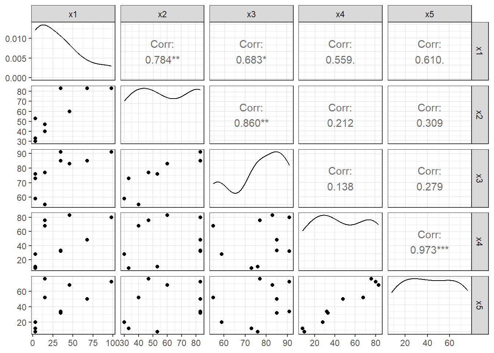
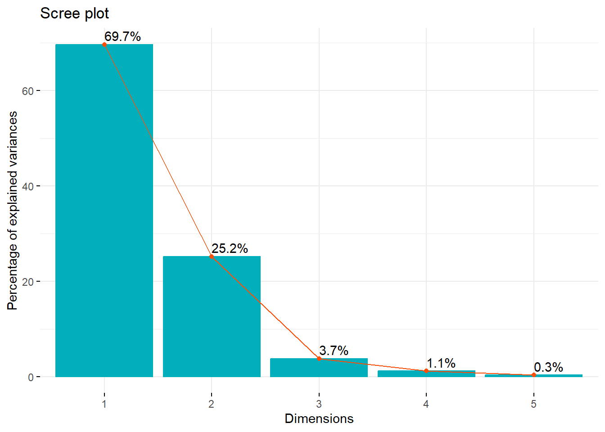
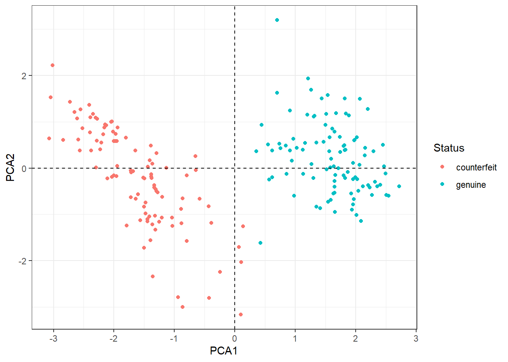

pacman::p_load("data.table",
"tidyverse",
"dplyr", "psych",
"ggplot2", "GGally",
"factoextra",
"ggbiplot")
# pacman::p_load("devtools")
# install_github("vqv/ggbiplot")
# library(ggbiplot)9 Principal Component Analysis
Principal Component Analysis의 장점
- Principal Component Analysis에서 생성된 새 축은 Original 변수들 측면에서 직접 해석할 수 있다.
- 새로운 데이터셋을 주축에 투영할 수 있다.
- 새로운 값을 주성분에 대입하여 수학적으로 차원 축소된 값을 얻을 수 있다.
- Principal Component Analysis는 수학적 변환이므로 계산적인 부담이 적다.
Principal Component Analysis의 단점
- 주성분은 선형결합식으로 이루어져 있으며, 비선형으로 차원 축소가 불가능하다.
- 수치형 변수만 적용할 수 있다.
- 주성분의 개수는 여러가지 지표를 이용하여 사용자가 판단해야 한다.
9.1 Package Loading
9.2 예제 1
- 주성분분석을 수행하기 위해 사용되는 데이터는 자유아카데미에서 출판한 책 R을 활용한 다변량 자료분석 방법론의 데이터 파일 중 “satis.csv”이다.
- 이 데이터는 어떤 제품에 대한 고객의 만족도를 조사하여 얻어진 데이터로 총 8개의 변수를 포함한다.
ID: 고객 아이디gender: 고객 성별age: 고객 나이x1: 가격에 대한 만족도x2: 성능에 대한 만족도x3: 편리성에 대한 만족도x4: 디자인에 대한 만족도x5: 색상에 대한 만족도
- 만족도는 5점 척도로 측정되어 있으며, “1 = 매우 만족하지 않는다.”, “2 = 만족하지 않는다.”, “3 = 보통이다.”, “4 = 만족한다.”, “5 = 매우 만족한다.”를 의미한다.
9.2.1 데이터 불러오기
satis <- read.csv("./DATA/satis.csv")
satis ID gender age x1 x2 x3 x4 x5
1 1 F 10 1 2 4 1 1
2 2 F 10 1 2 3 2 1
3 3 F 20 2 5 5 2 2
4 4 F 20 2 5 4 2 2
5 5 F 30 1 2 3 4 3
6 6 M 30 1 3 4 1 1
7 7 M 40 4 5 5 3 3
8 8 M 40 1 3 4 4 4
9 9 M 50 3 3 5 5 4
10 10 M 50 5 5 5 4 49.2.2 데이터 탐색
9.2.2.1 기술통계량
describe(satis[,c("x1", "x2", "x3", "x4", "x5")]) vars n mean sd median trimmed mad min max range skew kurtosis se
x1 1 10 2.1 1.45 1.5 1.88 0.74 1 5 4 0.83 -0.92 0.46
x2 2 10 3.5 1.35 3.0 3.50 1.48 2 5 3 0.12 -1.94 0.43
x3 3 10 4.2 0.79 4.0 4.25 1.48 3 5 2 -0.29 -1.50 0.25
x4 4 10 2.8 1.40 2.5 2.75 2.22 1 5 4 0.10 -1.64 0.44
x5 5 10 2.5 1.27 2.5 2.50 2.22 1 4 3 0.00 -1.82 0.40Caution! Package "psych"에서 제공하는 함수 describe()를 이용하여 기술통계량을 출력할 수 있다.
Result! 변수 x1의 표준편차는 다른 변수들에 비해 상대적으로 큰 반면, 변수 x3는 다른 변수들에 비해 상대적으로 표준편차가 작다.
9.2.2.2 상관행렬
cor(satis[,c("x1", "x2", "x3", "x4", "x5")]) x1 x2 x3 x4 x5
x1 1.0000000 0.70784332 0.7581754 0.44960032 0.5738636
x2 0.7078433 1.00000000 0.7282191 0.05868157 0.2909287
x3 0.7581754 0.72821908 1.0000000 0.24174689 0.4438968
x4 0.4496003 0.05868157 0.2417469 1.00000000 0.9389683
x5 0.5738636 0.29092868 0.4438968 0.93896829 1.0000000Result! 상대적으로 표준편차가 큰 변수 x1는 다른 변수들과 상관관계가 강하며, 특히, 변수 x3와 강한 양의 상관성을 가지고 있다(\(r=0.758\)). 그리고, 변수x4와 x5도 매우 강한 양의 상관성을 가지고 있다(\(r=0.939\)).
9.2.2.3 산점도행렬
ggpairs(satis[,-1],
mapping = aes(col = gender), alpha = 0.8) + # 변수 gender의 범주에 따라 색깔을 다르게 표현
scale_colour_manual(values = c("#00798c", "#d1495b")) + # 특정 색깔 지정
scale_fill_manual(values = c("#00798c", "#d1495b")) + # 특정 색깔 지정
theme_bw()9.2.3 공분산행렬을 이용한 주성분분석
satis.prcomp <- prcomp(satis[,c("x1", "x2", "x3", "x4", "x5")])
satis.prcompStandard deviations (1, .., p=5):
[1] 2.2542944 1.5386966 0.6528647 0.4472292 0.2157445
Rotation (n x k) = (5 x 5):
PC1 PC2 PC3 PC4 PC5
x1 0.5723794 0.2916057 -0.72250071 0.2316137 0.1081469
x2 0.3966884 0.6003640 0.62118712 0.2716472 -0.1501190
x3 0.2564469 0.2233868 -0.03232539 -0.9143660 -0.2173088
x4 0.4617789 -0.5982335 0.07138977 0.1323191 -0.6373947
x5 0.4858141 -0.3830720 0.29321981 -0.1378017 0.7157328Caution! 주성분분석은 함수 prcomp()를 통해 수행할 수 있다. 자세한 옵션은 ?prcomp를 통해 확인하거나 여기를 참고한다.
Result! 함수 prcomp()는 5개의 결과를 리스트로 반환한다.
sdev: 데이터셋을 주성분에 투영했을 때의 표준편차인 주성분의 표준편차(= 공분산행렬의 고유값의 제곱근)- 출력 결과의 “Standard deviations”와 동일
rotation: 주축의 계수(= 공분산행렬의 단위 고유벡터)- 출력 결과의 “Rotation”과 동일
center: 변수의 평균scale: 표준편차로 나누어 주는 작업 진행 여부x: 주성분 점수
satis.prcomp$sdev # 주성분의 표준편차[1] 2.2542944 1.5386966 0.6528647 0.4472292 0.2157445satis.prcomp$sdev^2 # 주성분의 분산 = 주성분에 의해 설명되는 분산의 양 = 공분산행렬의 고유값[1] 5.08184308 2.36758724 0.42623226 0.20001396 0.04654569Caution! 주성분의 분산은 함수 eigen(cov(satis[,c("x1", "x2", "x3", "x4", "x5")]))를 통해 얻어진 공분산행렬의 고유값과 동일하며, 공분산행렬의 대각성분 합이 주성분 분산의 합(공분산행렬의 고유값의 합)과 같음을 알 수 있다.
satis.prcomp$rotation # 주축의 계수 PC1 PC2 PC3 PC4 PC5
x1 0.5723794 0.2916057 -0.72250071 0.2316137 0.1081469
x2 0.3966884 0.6003640 0.62118712 0.2716472 -0.1501190
x3 0.2564469 0.2233868 -0.03232539 -0.9143660 -0.2173088
x4 0.4617789 -0.5982335 0.07138977 0.1323191 -0.6373947
x5 0.4858141 -0.3830720 0.29321981 -0.1378017 0.7157328Caution! 주축의 계수는 함수 eigen(cov(satis[,c("x1", "x2", "x3", "x4", "x5")]))를 통해 얻어진 공분산행렬의 단위 고유벡터와 동일하다.
Result! 첫 번째 주성분은 \(Y_1=0.572C_{1}+0.397C_{2}+0.256C_{3}+0.462C_{4}+0.486C_5\)이며, 두 번째 주성분은 \(Y_2=0.292C_1+0.600C_2+0.223C_3-0.598C_4-0.383C_5\)이다. 여기서 확률변수 \(C_{i}\)는 \(X_i-\mu_i\)이며, \(\mu_i\)는 \(X_i\)의 평균을 의미한다. 또한, 변수 x1-x5는 \(X_1\)-\(X_5\)로 표현한다.
주성분의 의미를 해석해보면, 첫 번째 주성분은 계수가 서로 비슷하므로 전반적인 만족도를 나타낸다고 할 수 있으며, 두 번째 주성분은 변수 x1-x3와 변수 x4-x5의 부호가 반대이므로 가격, 성능, 편리성 제품의 “내형적 요인”과 디자인, 색상 등 제품의 “외형적 요인”의 만족도 차이를 나타낸다고 할 수 있다.
# 요약
summary(satis.prcomp) Importance of components:
PC1 PC2 PC3 PC4 PC5
Standard deviation 2.2543 1.5387 0.65286 0.44723 0.21574
Proportion of Variance 0.6257 0.2915 0.05248 0.02463 0.00573
Cumulative Proportion 0.6257 0.9172 0.96964 0.99427 1.00000Result! 처음 2개의 고유값은 5.082(= \(2.2543^2\)), 2.368(= \(1.5387^2\))로서 각각 전체 변동의 62.6%(= 5.082/8.122)와 29.2%(= 2.368/8.122)를 차지한다. 따라서, 처음 2개의 주성분에 의해 데이터 변동의 약 91.7%가 설명될 수 있음을 알 수 있다. 이는 2개의 주성분만으로 데이터 변동을 충분히 설명할 수 있음을 의미한다. 만약 처음 2개의 주성분을 새로운 변수로 고려할 경우, 이는 원래 다섯 개의 예측변수들이 가지고 있는 정보를 2차원으로 축소한다는 의미이다.
# 변수 적재 Ver.1
1:5 %>% # 첫 번째 변수부터 다섯 번째 변수에 function을 적용
map_df(function(x) satis.prcomp$rotation[,x]*satis.prcomp$sdev[x]) # A tibble: 5 × 5
x1 x2 x3 x4 x5
<dbl> <dbl> <dbl> <dbl> <dbl>
1 1.29 0.894 0.578 1.04 1.10
2 0.449 0.924 0.344 -0.920 -0.589
3 -0.472 0.406 -0.0211 0.0466 0.191
4 0.104 0.121 -0.409 0.0592 -0.0616
5 0.0233 -0.0324 -0.0469 -0.138 0.154 Caution! 주성분의 변수 적재(Variable Loading)는 단위 고유벡터(= 주축의 계수)와 고유값의 제곱근(= 주성분의 표준편차)을 곱함으로써 계산될 수 있다. 변수 적재를 계산하기 위해 함수 map_df()를 이용한다.
Result! 변수 적재는 각 변수가 특정 주성분에 얼마나 기여하는지를 설명한다. 결과값의 부호는 양/음의 상관관계를 나타내며, 값의 절대값이 클수록 주성분과 변수는 강한 관계를 가지고 있다. 출력 결과는 주성분과 변수 사이의 공분산처럼 해석할 수 있다. 예를 들어, 변수 x1은 첫 번째 주성분과 양의 상관성(1.29)을 가지고 있으며, 변수 x4는 두 번째 주성분과 음의 상관성(-0.920)을 가지고 있다.
# 변수 적재 Ver.2
pcaDat <- get_pca(satis.prcomp) # 주성분 결과에서 변수에 대한 정보(좌표, 제곱 코사인, 기여) 추출
round(pcaDat$coord,3) # 변수 적재 Dim.1 Dim.2 Dim.3 Dim.4 Dim.5
x1 1.290 0.449 -0.472 0.104 0.023
x2 0.894 0.924 0.406 0.121 -0.032
x3 0.578 0.344 -0.021 -0.409 -0.047
x4 1.041 -0.920 0.047 0.059 -0.138
x5 1.095 -0.589 0.191 -0.062 0.154Caution! 변수 적재는 package "factoextra"에서 제공하는 함수 get_pca()를 이용하여 계산할 수 있다.
# 변수 적재 그래프
fviz_pca_var(satis.prcomp)Caution! 변수 적재 그래프는 package "factoextra"에서 제공하는 함수 fviz_pca_var()를 이용하여 만들 수 있다.
Result! 그래프의 x축과 y축은 각각 첫 번째 주성분과 두 번째 주성분에 대한 변수 적재값을 의미하며, 특정 주축을 기준으로 화살표의 길이가 길수록 해당 변수와 해당 주성분은 강한 상관성을 가진다.
# 주성분 점수
satis.score <- satis.prcomp$x
satis.score PC1 PC2 PC3 PC4 PC5
[1,] -2.8358625 0.3854386 -0.69889614 -0.51084444 0.22339007
[2,] -2.6305305 -0.4361818 -0.59518098 0.53584068 -0.19669584
[3,] 0.1306219 1.7202178 0.77444872 -0.38413777 -0.25779081
[4,] -0.1258250 1.4968309 0.80677411 0.53022827 -0.04048198
[5,] -0.7353444 -2.3987927 0.13403819 0.52487542 -0.04001978
[6,] -2.4391741 0.9858026 -0.07770902 -0.23919722 0.07327109
[7,] 2.2229738 1.3221236 -0.30594311 0.07360693 0.03684093
[8,] 0.4036049 -1.9581138 1.01611974 -0.25564510 0.30828518
[9,] 2.2665896 -1.7497491 -0.38981729 -0.57446472 -0.33012467
[10,] 3.7429463 0.6324238 -0.66383422 0.29973796 0.22332582Caution! 주성분 점수는 각 case의 관측값을 주성분에 대입함으로써 얻을 수 있으며, 고차원의 원본 데이터셋 대신 차원이 축소된 데이터셋으로 유용하게 사용될 수 있다. 함수 prcomp()를 이용한 결과 satis.prcomp에는 주성분 점수가 포함되어 있다.
Result! 첫 번째 주성분과 두 번째 주성분에 의해 얻어지는 \(i\)번째 case의 주성분 점수는 다음의 식을 이용하여 얻을 수 있다. \[
\begin{align}
\begin{cases}
y_{i1}=0.572c_{i1}+0.397c_{i2}+0.256c_{i3}+0.462c_{i4}+0.486c_{i5},\\
y_{i2}=0.292c_{i1}+0.600c_{i2}+0.223c_{i3}-0.598c_{i4}-0.383c_{i5},
\end{cases}
\end{align}
\] 여기서 \(c_{ij}=x_{ij}-\bar{x}_{j}\)는 \(i\)번째 case의 \(j\)번째 변수 관찰값 \(x_{ij}\)에서 \(j\)번째 변수의 평균값 \(\bar{x}_j\)을 뺀 것을 의미한다.
# 성별에 따른 주성분 점수 그래프 Ver.1
plot(satis.score[,1:2], # 첫 번째와 두 번째 주성분 점수
xlim = c(-4, 4), ylim = c(-2, 2), main = "성별에 따른 주성분 점수")
abline(v = 0, h = 0, lty = 2)
text(satis.score[,1:2], labels = satis$gender, pos = 4, col = "red")# 성별에 따른 주성분 점수 그래프 Ver.2
satisPca <- satis %>%
mutate(PCA1 = satis.score[, 1], PCA2 = satis.score[, 2])
ggplot(satisPca, aes(PCA1, PCA2,
col = gender)) + # 변수 gender의 범주에 따라 색깔을 다르게 표현
geom_point() +
geom_hline(yintercept=0, linetype='dashed', color='black') +
geom_vline(xintercept=0, linetype='dashed', color='black') +
theme_bw()Result! 그래프의 수직선을 중심으로 오른쪽에 위치하는 점들은 첫 번째 주성분 점수가 높다는 것을 의미하고 왼쪽에 위치하는 점들은 첫 번째 주성분 점수가 낮다는 것을 의미한다. 오른쪽에 위치하는 점 5개 중 4개가 남자이므로, 전반적으로 남자가 여자보다 첫 번째 주성분 점수가 높으며, 이는 남자들의 전반적인 만족도가 높다고 해석할 수 있다. 마찬가지로 수평선을 중심으로 위쪽에 위치하는 점들은 두 번째 주성분 점수가 높다는 것을 의미하고 아래쪽에 위치하는 점들은 두 번째 주성분 점수가 낮다는 것을 의미한다. 두 번째 주성분 점수가 높다는 것은 가격, 성능, 편리성 등 제품의 내형적 요인에 대해서는 만족도가 높으나 디자인, 색상 등 외형적 요인에 대해서는 만족도가 낮다고 해석할 수 있다.
# 주성분 점수 예측
predict(satis.prcomp, newdata = tail(satis[,c("x1", "x2", "x3", "x4", "x5")], 2)) PC1 PC2 PC3 PC4 PC5
9 2.266590 -1.7497491 -0.3898173 -0.5744647 -0.3301247
10 3.742946 0.6324238 -0.6638342 0.2997380 0.2233258Caution! 함수 predict()를 이용하여 새로운 case에 대한 주성분 점수를 예측할 수 있다. 여기서는 설명의 편의상 마지막 2개의 case를 새로운 자료로 취급하여 예측을 수행하였다.
# Biplot
fviz_pca_biplot(satis.prcomp, label = "var")Caution! 주성분 점수와 변수 적재를 하나의 그래프에 함께 표현한 것을 행렬도(Biplot)라고 한다. 위 Biplot에서는 주성분 점수를 점으로 표현하고, 변수 적재를 화살표로 표현한다. Biplot는 다음을 기준으로 해석할 수 있다.
1. 점은 각 case(= 데이터셋에서 하나의 행)에 대한 주성분 점수를 나타낸다.
2. 화살표는 변수 적재값을 의미하며, 정확한 변수 적재값은 알 수 없다.
3. 화살표의 길이는 상관성의 정도를 표현한다. 즉, 주축을 기준으로 화살표의 길이가 길수록 변수와 해당 주성분은 강한 상관성을 가진다.
4. 화살표와 주축이 평행에 가까울수록 해당 변수는 해당 주성분에만 큰 영향을 미친다.
5. 화살표들 간의 각도가 작을수록 해당 변수들은 강한 양의 상관관계를 나타내며, 180도는 강한 음의 상관관계를 나타낸다. 또한, 직각은 상관성이 없음을 의미한다.
Biplot을 통해서 군집성, 변수들의 상관구조 등을 시각적으로 파악할 수 있다.
Result! Biplot의 x축과 y축은 각각 첫 번째와 두 번째 주성분 점수를 의미한다. 변수 x1과 x5는 첫 번째 주축(x축, 수평 점선)을 기준으로 화살표의 길이가 길며 이는 두 변수가 첫 번째 주성분과 강한 상관성을 가진다고 할 수 있다. 또한, 변수 x1, x2, x3의 화살표들 간의 각도가 작기 때문에(즉, 서로 가까이 위치해있기 때문에) 강한 양의 상관관계를 가지며, 변수 x4와 x5 또한 강한 양의 상관관계를 가진다.
# ggbiplot을 이용한 Biplot
ggbiplot(satis.prcomp, # 함수 prcomp에 의한 객체
obs.scale = 1, # 관찰값에 적용할 scale
var.scale = 1, # 변수에 적용할 scale
labels = satis$ID, # 점에 대한 label
circle = TRUE) +
theme_bw()Caution! Package "ggbiplot"에서 제공하는 함수 ggbiplot()를 이용하여 Biplot을 만들 수 있으며, 함수에 대한 자세한 옵션은 여기를 참고한다.
# 스크리 그래프 Ver.1 (y축 : 고유값)
par(mfrow = c(1, 2))
screeplot(satis.prcomp, type = "b", main = "") # 막대 그래프
screeplot(satis.prcomp, type = "l", main = "") # 선 그래프# 스크리 그래프 Ver.2
fviz_screeplot(satis.prcomp,
addlabels = TRUE, # 막대 높이 표시 여부
# geom = "line", # 그래프 유형(bar / line)
choice = "eigenvalue", # y축 (variance / eigenvalue)
linecolor = "#FC4E07", # 선 색깔
barcolor = "#00AFBB", # 막대의 윤곽선 색깔
barfill = "#00AFBB") # 막대의 색깔fviz_screeplot(satis.prcomp,
addlabels = TRUE, # 막대 높이 표시 여부
choice = "variance", # y축(variance / eigenvalue)
linecolor = "#FC4E07", # 선 색깔
barcolor = "#00AFBB", # 막대의 윤곽선 색깔
barfill = "#00AFBB") # 막대의 색깔Result! 스크리 그래프를 보면 첫 번째 주성분과 두 번째 주성분의 분산(고유값)이 크며 가파른 경사를 형성한다. 그러므로, 2개의 주성분 개수를 고려할 수 있다.
9.2.4 상관행렬을 이용한 주성분분석
satis.cor.prcomp <- prcomp(satis[,c("x1", "x2", "x3", "x4", "x5")], center = TRUE, scale = TRUE)
satis.cor.prcompStandard deviations (1, .., p=5):
[1] 1.7628337 1.1829978 0.5033695 0.4610255 0.1643420
Rotation (n x k) = (5 x 5):
PC1 PC2 PC3 PC4 PC5
x1 0.5106549 0.1714026 -0.05545212 0.83272782 -0.1155083
x2 0.4065628 0.5002084 -0.64671083 -0.37226185 0.1663863
x3 0.4650578 0.3439269 0.75415171 -0.29030512 0.1114166
x4 0.3795169 -0.6205430 -0.05742977 -0.01399615 0.6836660
x5 0.4621973 -0.4658899 -0.08153030 -0.28898535 -0.6922142Caution! 상관행렬에 기초하여 주성분분석을 수행한다는 것은 표준화된 변수를 이용하여 주성분분석을 수행한다는 것을 의미한다. 함수 prcomp()의 옵션 center = TRUE와 scale = TRUE를 지정하여 변수를 표준화한 후, 상관행렬에 기초한 주성분분석을 수행할 수 있다.
Result! 상관행렬을 이용한 주성분분석 결과는 위에서 공분산행렬에 기초하여 수행한 주성분분석 결과와는 다른 것을 확인할 수 있다.
satis.cor.prcomp$sdev # 주성분의 표준편차[1] 1.7628337 1.1829978 0.5033695 0.4610255 0.1643420satis.cor.prcomp$sdev^2 # 주성분의 분산 = 주성분에 의해 설명되는 분산의 양 = 상관행렬의 고유값[1] 3.1075826 1.3994838 0.2533809 0.2125445 0.0270083Caution! 주성분의 분산은 함수 eigen(cor(satis[,c("x1", "x2", "x3", "x4", "x5")]))를 통해 얻어진 상관행렬의 고유값과 동일하며, 상관행렬의 대각성분 합이 주성분 분산의 합(상관행렬의 고유값의 합)인 변수 개수 “5”와 같음을 알 수 있다.
satis.cor.prcomp$rotation # 주축의 계수 PC1 PC2 PC3 PC4 PC5
x1 0.5106549 0.1714026 -0.05545212 0.83272782 -0.1155083
x2 0.4065628 0.5002084 -0.64671083 -0.37226185 0.1663863
x3 0.4650578 0.3439269 0.75415171 -0.29030512 0.1114166
x4 0.3795169 -0.6205430 -0.05742977 -0.01399615 0.6836660
x5 0.4621973 -0.4658899 -0.08153030 -0.28898535 -0.6922142Caution! 주축의 계수는 함수 eigen(cor(satis[,c("x1", "x2", "x3", "x4", "x5")]))를 통해 얻어진 상관행렬의 단위 고유벡터와 동일하다.
Result! 첫 번째 주성분은 \(Y_1=0.511Z_{1}+0.407Z_{2}+0.465Z_{3}+0.380Z_{4}+0.462Z_{5}\)이며, 두 번째 주성분은 \(Y_2=0.171Z_{1}+0.500Z_{2}+0.344Z_{3}-0.621Z_{4}-0.466Z_{5}\)이 된다. 여기서 확률변수 \(Z_{i}\)는 \((X_i-\mu_i)/\sigma_{i}\)이며, \(\mu_i\)와 \(\sigma_{i}\)는 각각 \(X_i\)의 평균과 표준편차를 의미한다. 또한, 변수 x1-x5는 \(X_1\)-\(X_5\)로 표현한다.
주성분의 의미를 해석해보면, 첫 번째 주성분은 계수가 서로 비슷하므로 전반적인 만족도를 나타낸다고 할 수 있으며, 두 번째 주성분은 변수 x1-x3와 변수 x4-x5의 부호가 반대이므로 가격, 성능, 편리성 제품의 “내형적 요인”과 디자인, 색상 등 제품의 “외형적 요인”의 만족도 차이를 나타낸다고 할 수 있다.
# 요약
summary(satis.cor.prcomp) Importance of components:
PC1 PC2 PC3 PC4 PC5
Standard deviation 1.7628 1.1830 0.50337 0.46103 0.1643
Proportion of Variance 0.6215 0.2799 0.05068 0.04251 0.0054
Cumulative Proportion 0.6215 0.9014 0.95209 0.99460 1.0000Result! 처음 2개의 고유값은 3.108(= \(1.7628^2\)), 1.399(= \(1.1830^2\))로서 각각 전체 변동의 62.2%(= 3.108/5)와 28.0%(= 1.399/5)를 차지한다. 따라서, 처음 2개의 주성분에 의해 데이터 변동의 약 90.1%가 설명될 수 있음을 알 수 있다. 이는 2개의 주성분만으로 데이터 변동을 충분히 설명할 수 있음을 의미한다. 만약 처음 2개의 주성분을 새로운 변수로 고려할 경우, 이는 원래 다섯 개의 예측변수들이 가지고 있는 정보를 2차원으로 축소한다는 의미이다.
# 변수 적재 Ver.1
1:5 %>% # 첫 번째 변수부터 다섯 번째 변수에 function을 적용
map_df(function(x) satis.cor.prcomp$rotation[,x]*satis.cor.prcomp$sdev[x]) # A tibble: 5 × 5
x1 x2 x3 x4 x5
<dbl> <dbl> <dbl> <dbl> <dbl>
1 0.900 0.717 0.820 0.669 0.815
2 0.203 0.592 0.407 -0.734 -0.551
3 -0.0279 -0.326 0.380 -0.0289 -0.0410
4 0.384 -0.172 -0.134 -0.00645 -0.133
5 -0.0190 0.0273 0.0183 0.112 -0.114 Caution! 주성분의 변수 적재(Variable Loading)는 단위 고유벡터(= 주축의 계수)와 고유값의 제곱근(= 주성분의 표준편차)을 곱함으로써 계산될 수 있다. 변수 적재를 계산하기 위해 함수 map_df()를 이용한다.
Result! 변수 적재는 각 변수가 특정 주성분에 얼마나 기여하는지를 설명한다. 결과값의 부호는 양/음의 상관관계를 나타내며, 값의 절대값이 클수록 주성분과 변수는 강한 관계를 가지고 있다. 출력 결과는 피어슨 상관계수처럼 해석할 수 있다. 예를 들어, 변수 x1은 첫 번째 주성분과 강한 양의 상관성(\(r=0.900\))을 가지며, 변수 x4는 두 번째 주성분과 강한 음의 상관성(\(r=-0.734\))을 가진다.
# 변수 적재 Ver.2
pcaDat <- get_pca(satis.cor.prcomp) # 주성분 결과에서 변수에 대한 정보(좌표, 제곱 코사인, 기여) 추출
round(pcaDat$coord,3) # 변수 적재 Dim.1 Dim.2 Dim.3 Dim.4 Dim.5
x1 0.900 0.203 -0.028 0.384 -0.019
x2 0.717 0.592 -0.326 -0.172 0.027
x3 0.820 0.407 0.380 -0.134 0.018
x4 0.669 -0.734 -0.029 -0.006 0.112
x5 0.815 -0.551 -0.041 -0.133 -0.114Caution! 변수 적재는 package "factoextra"에서 제공하는 함수 get_pca()를 이용하여 계산할 수 있다.
# 변수 적재 그래프
fviz_pca_var(satis.cor.prcomp)Result! 그래프의 x축과 y축은 각각 첫 번째 주성분과 두 번째 주성분에 대한 변수 적재값을 의미하며, 특정 주축을 기준으로 화살표의 길이가 길수록 해당 변수와 해당 주성분은 강한 상관성을 가진다.
# 주성분 점수
satis.cor.score <- satis.cor.prcomp$x
satis.cor.score PC1 PC2 PC3 PC4 PC5
[1,] -1.9906473 0.5778652 0.73759241 0.213431924 -0.18686461
[2,] -2.3088242 -0.3018902 -0.25953723 0.571452234 0.16077659
[3,] 0.4876344 1.4296420 0.11720524 -0.642443414 0.18686107
[4,] -0.1019340 0.9936350 -0.83885655 -0.274414499 0.04561479
[5,] -1.0377676 -1.9234789 -0.47013838 0.096087391 0.04784539
[6,] -1.6903807 0.9472936 0.25996481 -0.061501673 -0.06398017
[7,] 1.8279334 0.8554056 -0.06462653 0.269147743 -0.02902117
[8,] 0.2162042 -1.4850896 -0.05593690 -0.774548937 -0.23337697
[9,] 1.7819347 -1.2562730 0.78252584 -0.003312879 0.23734016
[10,] 2.8158471 0.1628903 -0.20819270 0.606102111 -0.16519509Caution! 주성분 점수는 각 case의 관측값을 주성분에 대입함으로써 얻을 수 있으며, 고차원의 원본 데이터셋 대신 차원이 축소된 데이터셋으로 유용하게 사용될 수 있다. 함수 prcomp()를 이용한 결과 satis.cor.prcomp에는 주성분 점수가 포함되어 있다.
Result! 첫 번째 주성분과 두 번째 주성분에 의해 얻어지는 \(i\)번째 case의 주성분 점수는 다음의 식을 이용하여 얻을 수 있다. \[
\begin{align}
\begin{cases}
y_{i1}=0.511z_{i1}+0.407z_{i2}+0.465z_{i3}+0.380z_{i4}+0.462z_{i5},\\
y_{i2}=0.171z_{i1}+0.500z_{i2}+0.344z_{i3}-0.621z_{i4}-0.466z_{i5},
\end{cases}
\end{align}
\] 여기서 \(z_{ij}=(x_{ij}-\bar{x}_{j})/s_{j}\)는 \(i\)번째 case의 \(j\)번째 변수 관찰값 \(x_{ij}\)에서 \(j\)번째 변수의 평균값 \(\bar{x}_j\)을 뺀 후 \(j\)번째 변수의 표준편차 값 \(s_j\)로 나눈 것을 의미한다.
# 성별에 따른 주성분 점수 그래프 Ver.1
plot(satis.cor.score[,1:2], # 첫 번째와 두 번째 주성분 점수
xlim = c(-4, 4), ylim = c(-2, 2), main = "성별에 따른 주성분 점수")
abline(v = 0, h = 0, lty = 2)
text(satis.cor.score[,1:2], labels = satis$gender, pos = 4, col = "red")# 성별에 따른 주성분 점수 그래프 Ver.2
satisPca <- satis %>%
mutate(PCA1 = satis.cor.score[, 1], PCA2 = satis.cor.score[, 2])
ggplot(satisPca, aes(PCA1, PCA2,
col = gender)) + # 변수 gender의 범주에 따라 색깔을 다르게 표현
geom_point() +
geom_hline(yintercept=0, linetype='dashed', color='black') +
geom_vline(xintercept=0, linetype='dashed', color='black') +
theme_bw()
Result! 그래프의 수직선을 중심으로 오른쪽에 위치하는 점들은 첫 번째 주성분 점수가 높다는 것을 의미하며, 왼쪽에 위치하는 점들은 첫 번째 주성분 점수가 낮다는 것을 의미한다. 오른쪽에 위치하는 점 5개 중 4개가 남자이므로, 이는 남자들의 전반적인 만족도가 높다고 해석할 수 있다. 마찬가지로 수평선을 중심으로 위쪽에 위치하는 점들은 두 번째 주성분 점수가 높다는 것을 의미하며, 아래쪽에 위치하는 점들은 두 번째 주성분 점수가 낮다는 것을 의미한다. 두 번째 주성분 점수가 높다는 것은 가격, 성능, 편리성 등 제품의 내형적 요인에 대해서는 만족도가 높으나 디자인, 색상 등 외형적 요인에 대해서는 만족도가 낮다고 해석할 수 있다.
# 주성분 점수 예측
predict(satis.cor.prcomp, newdata = tail(satis[,c("x1", "x2", "x3", "x4", "x5")], 2)) PC1 PC2 PC3 PC4 PC5
9 1.781935 -1.2562730 0.7825258 -0.003312879 0.2373402
10 2.815847 0.1628903 -0.2081927 0.606102111 -0.1651951Caution! 함수 predict()를 이용하여 새로운 case에 대한 주성분 점수를 예측할 수 있다. 여기서는 설명의 편의상 마지막 2개의 case를 새로운 자료로 취급하여 예측을 수행하였다.
# Biplot
fviz_pca_biplot(satis.cor.prcomp, label = "var")Caution! 주성분 점수와 변수 적재를 하나의 그래프에 함께 표현한 것을 행렬도(Biplot)라고 한다. 위 Biplot에서는 주성분 점수를 점으로 표현하고, 변수 적재를 화살표로 표현한다. Biplot는 다음을 기준으로 해석할 수 있다.
1. 점은 각 case(데이터셋에서 하나의 행)에 대한 주성분 점수를 나타낸다.
2. 화살표는 변수 적재값을 의미하며, 정확한 변수 적재값은 알 수 없다.
3. 화살표의 길이는 상관성의 정도를 표현한다. 즉, 주축을 기준으로 화살표의 길이가 길수록 변수와 해당 주성분은 강한 상관성을 가진다.
4. 화살표와 주축이 평행에 가까울수록 해당 변수는 해당 주성분에만 큰 영향을 미친다.
5. 화살표들 간의 각도가 작을수록 해당 변수들은 강한 양의 상관관계를 나타내며, 180도는 강한 음의 상관관계를 나타낸다. 또한, 직각은 상관성이 없음을 의미한다.
Biplot을 통해서 군집성, 변수들의 상관구조 등을 시각적으로 파악할 수 있다.
Result! Biplot의 x축과 y축은 각각 첫 번째와 두 번째 주성분 점수를 의미한다. 변수 x1과 x5는 첫 번째 주축(x축, 수평 점선)을 기준으로 화살표의 길이가 길며 이는 두 변수가 첫 번째 주성분과 강한 상관성을 가진다고 할 수 있다. 또한, 변수 x1, x2, x3의 화살표들 간의 각도가 작기 때문에(즉, 서로 가까이 위치해있기 때문에) 강한 양의 상관관계를 가지며, 변수 x4와 x5 또한 강한 양의 상관관계를 가진다.
# ggbiplot을 이용한 Biplot
ggbiplot(satis.cor.prcomp, # 함수 prcomp에 의한 객체
obs.scale = 1, # 관찰값에 적용할 스케일
var.scale = 1, # 변수에 적용할 스케일
labels = satis$ID, # 점에 대한 라벨
circle = TRUE) +
theme_bw()Caution! Package "ggbiplot"에서 제공하는 함수 ggbiplot()를 이용하여 Biplot을 만들 수 있으며, 함수에 대한 자세한 옵션은 여기를 참고한다.
# 스크리 그래프 Ver.1 (y축 : 고유값)
par(mfrow = c(1, 2))
screeplot(satis.cor.prcomp, type = "b", main = "") # 막대그래프
screeplot(satis.cor.prcomp, type = "l", main = "") # 선 그래프# 스크리 그래프 Ver.2
fviz_screeplot(satis.cor.prcomp,
addlabels = TRUE, # 막대 높이 표시 여부
# geom = "line", # 그래프 유형(bar / line)
choice = "eigenvalue", # y축 (variance / eigenvalue)
linecolor = "#FC4E07", # 선 색깔
barcolor = "#00AFBB", # 막대의 윤곽선 색깔
barfill = "#00AFBB") # 막대의 색깔fviz_screeplot(satis.cor.prcomp,
addlabels = TRUE, # 막대 높이 표시 여부
choice = "variance", # y축(variance / eigenvalue)
linecolor = "#FC4E07", # 선 색깔
barcolor = "#00AFBB", # 막대의 윤곽선 색깔
barfill = "#00AFBB") # 막대의 색깔Result! 스크리 그래프를 보면, 첫 번째 주성분과 두 번째 주성분의 분산(고유값)이 크며 가파른 경사를 형성한다. 그러므로, 2개의 주성분 개수를 고려할 수 있다.
9.3 예제 2
- 주성분분석을 수행하기 위해 사용되는 데이터는 자유아카데미에서 출판한 책 R을 활용한 다변량 자료분석 방법론의 데이터 파일 중 “student.csv”이다.
- 이 데이터는 10명의 학생에 대한 5과목 점수 데이터로 총 6개의 변수를 포함한다.
ID: 학생 IDx1: 국어 점수x2: 영어 점수x3: 제2외국어 점수x4: 수학 점수x5: 과학 점수
9.3.1 데이터 불러오기
student <- read.csv("./DATA/student.csv")
student ID x1 x2 x3 x4 x5
1 1 3 33 73 8 12
2 2 3 30 59 28 20
3 3 35 83 91 32 34
4 4 35 83 85 33 32
5 5 15 40 55 68 52
6 6 3 53 76 10 8
7 7 68 83 85 48 50
8 8 15 47 77 76 76
9 9 46 60 83 83 68
10 10 98 83 91 80 729.3.2 데이터 탐색
9.3.2.1 기술통계량
describe(student[,c("x1", "x2", "x3", "x4", "x5")]) vars n mean sd median trimmed mad min max range skew kurtosis se
x1 1 10 32.1 31.56 25.0 27.50 31.88 3 98 95 0.80 -0.69 9.98
x2 2 10 59.5 22.01 56.5 60.25 37.06 30 83 53 -0.02 -1.87 6.96
x3 3 10 77.5 12.38 80.0 78.62 8.90 55 91 36 -0.63 -1.09 3.91
x4 4 10 46.6 28.55 40.5 46.88 43.00 8 83 75 0.01 -1.77 9.03
x5 5 10 42.4 24.94 42.0 42.50 35.58 8 76 68 0.00 -1.71 7.89Result! 변수 x1의 표준편차는 다른 변수들에 비해 상대적으로 큰 반면, 변수 x3는 다른 변수들에 비해 상대적으로 표준편차가 작다.
9.3.2.2 상관행렬
cor(student[,c("x1", "x2", "x3", "x4", "x5")]) x1 x2 x3 x4 x5
x1 1.0000000 0.7838622 0.6833432 0.5592287 0.6102284
x2 0.7838622 1.0000000 0.8604151 0.2117815 0.3092596
x3 0.6833432 0.8604151 1.0000000 0.1380259 0.2793357
x4 0.5592287 0.2117815 0.1380259 1.0000000 0.9731614
x5 0.6102284 0.3092596 0.2793357 0.9731614 1.0000000Result! 상대적으로 표준편차가 큰 변수 x1은 상대적으로 다른 변수들과 0.5 이상의 강한 상관성을 보인다. 그리고, 변수 x4와 x5 사이에는 매우 강한 양의 상관성을 가지고 있다(\(r=0.973\)).
9.3.2.3 산점도행렬
ggpairs(student[,-1]) +
theme_bw()
9.3.3 공분산행렬을 이용한 주성분분석
student.prcomp <- prcomp(student[,c("x1", "x2", "x3", "x4", "x5")])
student.prcompStandard deviations (1, .., p=5):
[1] 46.259833 27.802085 10.689902 5.935039 2.997379
Rotation (n x k) = (5 x 5):
PC1 PC2 PC3 PC4 PC5
x1 0.6155240 0.4184625 0.66098180 -0.08517714 0.04321101
x2 0.3149575 0.5395460 -0.57224849 0.52551269 0.07784525
x3 0.1533269 0.2865461 -0.39464213 -0.75500570 -0.41061682
x4 0.5208733 -0.5438504 -0.06785537 0.26119676 -0.60007473
x5 0.4765646 -0.3948383 -0.27438652 -0.27986409 0.68071806Caution! 주성분분석은 함수 prcomp()를 통해 수행할 수 있다. 자세한 옵션은 ?prcomp를 통해 확인하거나 여기를 참고한다.
Result! 함수 prcomp()는 5개의 결과를 리스트로 반환한다.
sdev: 데이터셋을 주성분에 투영했을 때의 표준편차인 주성분의 표준편차(= 공분산행렬의 고유값의 제곱근)- 출력 결과의 “Standard deviations”와 동일
rotation: 주축의 계수(= 공분산행렬의 단위 고유벡터)- 출력 결과의 “Rotation”과 동일
center: 변수의 평균scale: 표준편차로 나누어 주는 작업 진행 여부x: 주성분 점수
student.prcomp$sdev # 주성분의 표준편차[1] 46.259833 27.802085 10.689902 5.935039 2.997379student.prcomp$sdev^2 # 주성분의 분산 = 주성분에 의해 설명되는 분산의 양 = 공분산행렬의 고유값[1] 2139.972189 772.955942 114.274008 35.224690 8.984282Caution! 주성분의 분산은 함수 eigen(cov(student[,c("x1", "x2", "x3", "x4", "x5")]))를 통해 얻어진 공분산행렬의 고유값과 동일하며, 공분산행렬의 대각성분 합이 주성분 분산의 합(공분산행렬의 고유값의 합)과 같음을 알 수 있다.
student.prcomp$rotation # 주축의 계수 PC1 PC2 PC3 PC4 PC5
x1 0.6155240 0.4184625 0.66098180 -0.08517714 0.04321101
x2 0.3149575 0.5395460 -0.57224849 0.52551269 0.07784525
x3 0.1533269 0.2865461 -0.39464213 -0.75500570 -0.41061682
x4 0.5208733 -0.5438504 -0.06785537 0.26119676 -0.60007473
x5 0.4765646 -0.3948383 -0.27438652 -0.27986409 0.68071806Caution! 주축의 계수는 함수 eigen(cov(student[,c("x1", "x2", "x3", "x4", "x5")]))를 통해 얻어진 공분산행렬의 단위 고유벡터와 동일하다.
Result! 첫 번째 주성분은 \(Y_1=0.616C_{1}+0.315C_{2}+0.153C_{3}+0.521C_{4}+0.477C_{5}\)이며, 두 번째 주성분은 \(Y_2=0.418C_1+0.540C_2+0.287C_3-0.544C_4-0.395C_{5}\)이 된다. 여기서 확률변수 \(C_{i}\)는 \(X_i-\mu_i\)이며, \(\mu_i\)는 \(X_i\)의 평균을 의미한다. 또한, 변수 x1-x5는 \(X_1\)-\(X_5\)로 표현한다.
주성분의 의미를 해석해보면, 첫 번째 주성분은 계수가 서로 비슷하므로 전반적인 평점을 나타낸다고 할 수 있으며, 두 번째 주성분은 변수 x1-x3와 변수 x4-x5의 부호가 반대이므로 국어, 영어, 제2외국어의 “인문계열”과 수학, 과학의 “이과계열”의 점수 차이를 나타낸다고 할 수 있다.
# 요약
summary(student.prcomp) Importance of components:
PC1 PC2 PC3 PC4 PC5
Standard deviation 46.2598 27.8021 10.68990 5.93504 2.99738
Proportion of Variance 0.6967 0.2517 0.03721 0.01147 0.00293
Cumulative Proportion 0.6967 0.9484 0.98561 0.99707 1.00000Result! 처음 2개의 고유값은 2139.972(= \(46.2598^2\)), 772.956(= \(27.8021^2\))로서 각각 전체 변동의 69.7%(= 2139.972/3071.411)와 25.2%(= 772.956/3071.411)를 차지한다. 따라서, 처음 2개의 주성분에 의해 데이터 변동의 약 94.8%가 설명될 수 있음을 알 수 있다. 이는 2개의 주성분만으로 데이터 변동을 충분히 설명할 수 있음을 의미한다. 만약 처음 2개의 주성분을 새로운 변수로 고려할 경우, 이는 원래 다섯 개의 예측변수들이 가지고 있는 정보를 2차원으로 축소한다는 의미이다.
# 변수 적재 Ver.1
1:5 %>% # 첫 번째 변수부터 다섯 번째 변수에 function을 적용
map_df(function(x) student.prcomp$rotation[,x]*student.prcomp$sdev[x]) # A tibble: 5 × 5
x1 x2 x3 x4 x5
<dbl> <dbl> <dbl> <dbl> <dbl>
1 28.5 14.6 7.09 24.1 22.0
2 11.6 15.0 7.97 -15.1 -11.0
3 7.07 -6.12 -4.22 -0.725 -2.93
4 -0.506 3.12 -4.48 1.55 -1.66
5 0.130 0.233 -1.23 -1.80 2.04Caution! 주성분의 변수 적재(Variable Loading)는 단위 고유벡터(= 주축의 계수)와 고유값의 제곱근(= 주성분의 표준편차)을 곱함으로써 계산될 수 있다. 변수 적재를 계산하기 위해 함수 map_df()를 이용한다.
Result! 변수 적재는 각 변수가 특정 주성분에 얼마나 기여하는지를 설명한다. 결과값의 부호는 양/음의 상관관계를 나타내며, 값의 절대값이 클수록 주성분과 변수는 강한 관계를 가지고 있다. 출력 결과는 주성분과 변수 사이의 공분산처럼 해석할 수 있다. 예를 들어, 변수 x1은 첫 번째 주성분과 양의 상관성(28.5)을 가지고 있으며, 변수 x4는 두 번째 주성분과 음의 상관성(-15.1)을 가지고 있다.
# 변수 적재 Ver.2
pcaDat <- get_pca(student.prcomp) # 주성분 결과에서 변수에 대한 정보(좌표, 제곱 코사인, 기여) 추출
round(pcaDat$coord,3) # 변수 적재 Dim.1 Dim.2 Dim.3 Dim.4 Dim.5
x1 28.474 11.634 7.066 -0.506 0.130
x2 14.570 15.001 -6.117 3.119 0.233
x3 7.093 7.967 -4.219 -4.481 -1.231
x4 24.096 -15.120 -0.725 1.550 -1.799
x5 22.046 -10.977 -2.933 -1.661 2.040Caution! 변수 적재는 package "factoextra"에서 제공하는 함수 get_pca()를 이용하여 계산할 수 있다.
# 변수 적재 그래프
fviz_pca_var(student.prcomp)Result! 그래프의 x축과 y축은 각각 첫 번째 주성분과 두 번째 주성분에 대한 변수 적재값을 의미하며, 특정 주축을 기준으로 화살표의 길이가 길수록 해당 변수와 해당 주성분은 강한 상관성을 가진다.
# 주성분 점수
student.score <- student.prcomp$x
student.score PC1 PC2 PC3 PC4 PC5
[1,] -61.5413668 5.231022 8.666472 -9.6242324 0.99649177
[2,] -50.4028345 -14.434976 12.356007 2.3543318 -0.04415861
[3,] -0.3514567 29.018103 -13.563126 0.4473432 -0.54559251
[4,] -1.7036742 27.544653 -10.714355 5.7983024 -0.04340246
[5,] -4.3952811 -39.552990 4.649289 11.0995753 0.67528203
[6,] -55.6467471 17.373233 -3.000589 0.2628541 -2.60147547
[7,] 34.9998806 26.089071 5.141256 1.8678545 4.63436503
[8,] 16.7871502 -43.299075 -15.166696 -6.4591254 3.72326437
[9,] 40.7164010 -22.241609 -2.763239 -2.7306959 -6.03517460
[10,] 81.5379285 14.272568 14.394982 -3.0162076 -0.75959955Caution! 주성분 점수는 각 case의 관측값을 주성분에 대입함으로써 얻을 수 있으며, 고차원의 원본 데이터셋 대신 차원이 축소된 데이터셋으로 유용하게 사용될 수 있다. 함수 prcomp()를 이용한 결과 student.prcomp에는 주성분 점수가 포함되어 있다.
Result! 첫 번째 주성분과 두 번째 주성분에 의해 얻어지는 \(i\)번째 case의 주성분 점수는 다음의 식을 이용하여 얻을 수 있다. \[
\begin{align}
\begin{cases}
y_{i1}=0.616c_{i1}+0.315c_{i2}+0.153c_{i3}+0.521c_{i4}+0.477c_{i5},\\
y_{i2}=0.418c_{i1}+0.540c_{i2}+0.287c_{i3}-0.544c_{i4}-0.395c_{i5},
\end{cases}
\end{align}
\] 여기서 \(c_{ij}=x_{ij}-\bar{x}_{j}\)는 \(i\)번째 case의 \(j\)번째 변수 관찰값 \(x_{ij}\)에서 \(j\)번째 변수의 평균값 \(\bar{x}_j\)을 뺀 것을 의미한다.
# 주성분 점수 그래프 Ver.1
plot(student.score[,1:2], # 첫 번째와 두 번째 주성분 점수
main = "Case별 주성분 점수")
abline(v = 0, h = 0, lty = 2)
text(student.score[,1:2], labels = student$ID, pos = 4, col = "red")# 주성분 점수 그래프 Ver.2
studentPca <- student %>%
mutate(PCA1 = student.score[, 1], PCA2 = student.score[, 2])
ggplot(studentPca, aes(PCA1, PCA2)) +
geom_point() +
geom_hline(yintercept=0, linetype='dashed', color='black') +
geom_vline(xintercept=0, linetype='dashed', color='black') +
geom_text(aes(label = ID), hjust=0, vjust=0) +
theme_bw()Result! 그래프의 수직선을 중심으로 오른쪽에 위치하는 점들은 첫 번째 주성분 점수가 높다는 것을 의미하고 왼쪽에 위치하는 점들은 첫 번째 주성분 점수가 낮다는 것을 의미한다. 그래프를 살펴보면, 그래프의 오른쪽에 위치하는 “10”, “9”, “7”번 case는 첫 번째 주성분 값이 높으며, 이는 “10”, “9”, “7”번 case의 전반적인 평점이 높다고 해석할 수 있다. 반면, 왼쪽에 위치하는 “1”, “2”, “6”번 case는 전반적인 평점이 낮다고 해석할 수 있다. 마찬가지로 수평선을 중심으로 위쪽에 위치하는 점들은 두 번째 주성분 점수가 높다는 것을 의미하고 아래쪽에 위치하는 점들은 두 번째 주성분 점수가 낮다는 것을 의미한다. 두 번째 주성분 점수가 높다는 것은 국어, 영어, 제2외국어 등 인문계열 과목에 대해서는 점수가 높으나 수학, 과학 등 이과계열 과목에 대해서는 점수가 낮다고 해석할 수 있다.
# 주성분 점수 예측
predict(student.prcomp, newdata = tail(student[,c("x1", "x2", "x3", "x4", "x5")], 2)) PC1 PC2 PC3 PC4 PC5
9 40.71640 -22.24161 -2.763239 -2.730696 -6.0351746
10 81.53793 14.27257 14.394982 -3.016208 -0.7595996Caution! 함수 predict()를 이용하여 새로운 case에 대한 주성분 점수를 예측할 수 있다. 여기서는 설명의 편의상 마지막 2개의 case를 새로운 자료로 취급하여 예측을 수행하였다.
# Biplot
fviz_pca_biplot(student.prcomp, label = "var")Caution! 주성분 점수와 변수 적재를 하나의 그래프에 함께 표현한 것을 행렬도(Biplot)라고 한다. 위 Biplot에서는 주성분 점수를 점으로 표현하고, 변수 적재를 화살표로 표현한다. Biplot는 다음을 기준으로 해석할 수 있다.
1. 점은 각 case(데이터셋에서 하나의 행)에 대한 주성분 점수를 나타낸다.
2. 화살표는 변수 적재값을 의미하며, 정확한 변수 적재값은 알 수 없다.
3. 화살표의 길이는 상관성의 정도를 표현한다. 즉, 주축을 기준으로 화살표의 길이가 길수록 변수와 해당 주성분은 강한 상관성을 가진다.
4. 화살표와 주축이 평행에 가까울수록 해당 변수는 해당 주성분에만 큰 영향을 미친다.
5. 화살표들 간의 각도가 작을수록 해당 변수들은 강한 양의 상관관계를 나타내며, 180도는 강한 음의 상관관계를 나타낸다. 또한, 직각은 상관성이 없음을 의미한다.
Biplot을 통해서 군집성, 변수들의 상관구조 등을 시각적으로 파악할 수 있다.
Result! Biplot의 x축과 y축은 각각 첫 번째와 두 번째 주성분 점수를 의미한다. 변수 x1과 x4는 첫 번째 주축(x축, 수평 점선)을 기준으로 화살표의 길이가 길며, 이는 두 변수가 첫 번째 주성분과 강한 상관성을 가진다고 할 수 있다. 또한, 변수 x1, x2, x3의 화살표들 간의 각도가 작기 때문에(즉, 서로 가까이 위치해있기 때문에) 강한 양의 상관관계를 가지며, 변수 x4와 x5 또한 강한 양의 상관관계를 가진다.
# ggbiplot을 이용한 Biplot
ggbiplot(student.prcomp, # 함수 prcomp에 의한 객체
obs.scale = 1, # 관찰값에 적용할 스케일
var.scale = 1, # 변수에 적용할 스케일
labels = student$ID, # 점에 대한 라벨
circle = TRUE) +
theme_bw()Caution! Package "ggbiplot"에서 제공하는 함수 ggbiplot()를 이용하여 Biplot을 만들 수 있으며, 함수에 대한 자세한 옵션은 여기를 참고한다.
# 스크리 그래프 Ver.1 (y축 : 고유값)
par(mfrow = c(1, 2))
screeplot(student.prcomp, type = "b", main = "") # 막대그래프
screeplot(student.prcomp, type = "l", main = "") # 선 그래프# 스크리 그래프 Ver.2
fviz_screeplot(student.prcomp,
addlabels = TRUE, # 막대 높이 표시 여부
# geom = "line", # 그래프 유형(bar / line)
choice = "eigenvalue", # y축 (variance / eigenvalue)
linecolor = "#FC4E07", # 선 색깔
barcolor = "#00AFBB", # 막대의 윤곽선 색깔
barfill = "#00AFBB") # 막대의 색깔fviz_screeplot(student.prcomp,
addlabels = TRUE, # 막대 높이 표시 여부
choice = "variance", # y축(variance / eigenvalue)
linecolor = "#FC4E07", # 선 색깔
barcolor = "#00AFBB", # 막대의 윤곽선 색깔
barfill = "#00AFBB") # 막대의 색깔
Result! 스크리 그래프를 보면 첫 번째 주성분과 두 번째 주성분의 분산(고유값)이 크며 가파른 경사를 형성한다. 그러므로, 2개의 주성분 개수를 고려할 수 있다.
9.3.4 상관행렬을 이용한 주성분분석
student.cor.prcomp <- prcomp(student[,c("x1", "x2", "x3", "x4", "x5")], center = TRUE, scale = TRUE)
student.cor.prcompStandard deviations (1, .., p=5):
[1] 1.7852209 1.2132058 0.4662250 0.3308475 0.1195505
Rotation (n x k) = (5 x 5):
PC1 PC2 PC3 PC4 PC5
x1 0.5175853 0.09386107 -0.71009530 0.4642922 0.05910103
x2 0.4516210 0.43816660 -0.11258435 -0.7683317 0.03224429
x3 0.4206036 0.47398415 0.62887267 0.4183725 -0.16707843
x4 0.3980188 -0.57412032 0.06907097 -0.1329413 -0.69965898
x5 0.4391100 -0.49489900 0.28781556 -0.0372845 0.69139676Caution! 상관행렬에 기초하여 주성분분석을 수행한다는 것은 표준화된 변수를 이용하여 주성분분석을 수행한다는 것을 의미한다. 함수 prcomp()의 옵션 center = TRUE와 scale = TRUE를 지정하여 변수를 표준화한 후, 상관행렬에 기초한 주성분분석을 수행할 수 있다.
Result! 상관행렬을 이용한 주성분분석 결과는 위에서 공분산행렬에 기초하여 수행한 주성분분석 결과와는 다른 것을 확인할 수 있다.
student.cor.prcomp$sdev # 주성분의 표준편차[1] 1.7852209 1.2132058 0.4662250 0.3308475 0.1195505student.cor.prcomp$sdev^2 # 주성분의 분산 = 주성분에 의해 설명되는 분산의 양 = 상관행렬의 고유값[1] 3.18701362 1.47186824 0.21736574 0.10946007 0.01429233Caution! 주성분의 분산은 함수 eigen(cor(student[,c("x1", "x2", "x3", "x4", "x5")]))를 통해 얻어진 상관행렬의 고유값과 동일하며, 상관행렬의 대각성분 합이 주성분 분산의 합(상관행렬의 고유값의 합)인 변수 개수 “5”와 같음을 알 수 있다.
student.cor.prcomp$rotation # 주축의 계수 PC1 PC2 PC3 PC4 PC5
x1 0.5175853 0.09386107 -0.71009530 0.4642922 0.05910103
x2 0.4516210 0.43816660 -0.11258435 -0.7683317 0.03224429
x3 0.4206036 0.47398415 0.62887267 0.4183725 -0.16707843
x4 0.3980188 -0.57412032 0.06907097 -0.1329413 -0.69965898
x5 0.4391100 -0.49489900 0.28781556 -0.0372845 0.69139676Caution! 주축의 계수는 함수 eigen(cor(student[,c("x1", "x2", "x3", "x4", "x5")]))를 통해 얻어진 상관행렬의 단위 고유벡터와 동일하다.
Result! 첫 번째 주성분은 \(Y_1=0.518Z_{1}+0.452Z_{2}+0.421Z_{3}+0.398Z_{4}+0.439Z_{5}\)이며, 두 번째 주성분은 \(Y_2=0.094Z_{1}+0.438Z_{2}+0.474Z_{3}-0.574Z_{4}-0.495Z_{5}\)이 된다. 여기서 확률변수 \(Z_{i}\)는 \((X_i-\mu_i)/\sigma_{i}\)이며, \(\mu_i\)와 \(\sigma_{i}\)는 각각 \(X_i\)의 평균과 표준편차를 의미한다. 또한, 변수 x1-x5는 \(X_1\)-\(X_5\)로 표현한다.
주성분의 의미를 해석해보면, 첫 번째 주성분은 계수가 서로 비슷하므로 전반적인 평점을 나타낸다고 할 수 있으며, 두 번째 주성분은 변수 x1-x3와 변수 x4-x5의 부호가 반대이므로 국어, 영어, 제2외국어의 “인문계열”과 수학, 과학의 “이과계열”의 점수 차이를 나타낸다고 할 수 있다.
# 요약
summary(student.cor.prcomp) Importance of components:
PC1 PC2 PC3 PC4 PC5
Standard deviation 1.7852 1.2132 0.46622 0.33085 0.11955
Proportion of Variance 0.6374 0.2944 0.04347 0.02189 0.00286
Cumulative Proportion 0.6374 0.9318 0.97525 0.99714 1.00000Result! 처음 2개의 고유값은 3.187(= \(1.7852^2\)), 1.472(= \(1.2132^2\))로서 각각 전체 변동의 63.7%(= 3.187/5)와 29.4%(= 1.472/5)를 차지한다. 따라서, 처음 2개의 주성분에 의해 데이터 변동의 약 93.2%가 설명될 수 있음을 알 수 있다. 이는 2개의 주성분만으로 데이터 변동을 충분히 설명할 수 있음을 의미한다. 만약 처음 2개의 주성분을 새로운 변수로 고려할 경우, 이는 원래 다섯 개의 예측변수들이 가지고 있는 정보를 2차원으로 축소한다는 의미를 가진다.
# 변수 적재 Ver.1
1:5 %>% # 첫 번째 변수부터 다섯 번째 변수에 function을 적용
map_df(function(x) student.cor.prcomp$rotation[,x]*student.cor.prcomp$sdev[x]) # A tibble: 5 × 5
x1 x2 x3 x4 x5
<dbl> <dbl> <dbl> <dbl> <dbl>
1 0.924 0.806 0.751 0.711 0.784
2 0.114 0.532 0.575 -0.697 -0.600
3 -0.331 -0.0525 0.293 0.0322 0.134
4 0.154 -0.254 0.138 -0.0440 -0.0123
5 0.00707 0.00385 -0.0200 -0.0836 0.0827Caution! 주성분의 변수 적재(Variable Loading)는 단위 고유벡터(= 주축의 계수)와 고유값의 제곱근(= 주성분의 표준편차)을 곱함으로써 계산될 수 있다. 변수 적재를 계산하기 위해 함수 map_df()를 이용한다.
Result! 변수 적재는 각 변수가 특정 주성분에 얼마나 기여하는지를 설명한다. 결과값의 부호는 양/음의 상관관계를 나타내며, 값의 절대값이 클수록 주성분과 변수는 강한 관계를 가지고 있다. 출력 결과는 피어슨 상관계수처럼 해석할 수 있다. 예를 들어, 변수 x1은 첫 번째 주성분과 강한 양의 상관성(\(r=0.924\))을 가지고 있으며, 변수 x4는 두 번째 주성분과 강한 음의 상관성(\(r=-0.697\))을 가지고 있다.
# 변수 적재 Ver.2
pcaDat <- get_pca(student.cor.prcomp) # 주성분 결과에서 변수에 대한 정보(좌표, 제곱 코사인, 기여) 추출
round(pcaDat$coord,3) # 변수 적재 Dim.1 Dim.2 Dim.3 Dim.4 Dim.5
x1 0.924 0.114 -0.331 0.154 0.007
x2 0.806 0.532 -0.052 -0.254 0.004
x3 0.751 0.575 0.293 0.138 -0.020
x4 0.711 -0.697 0.032 -0.044 -0.084
x5 0.784 -0.600 0.134 -0.012 0.083Caution! 변수 적재는 package "factoextra"에서 제공하는 함수 get_pca()를 이용하여 계산할 수 있다.
# 변수 적재 그래프
fviz_pca_var(student.cor.prcomp)Result! 그래프의 x축과 y축은 각각 첫 번째 주성분과 두 번째 주성분에 대한 변수 적재값을 의미하며, 특정 주축을 기준으로 화살표의 길이가 길수록 해당 변수와 해당 주성분은 강한 상관성을 가진다.
# 주성분 점수
student.cor.score <- student.cor.prcomp$x
student.cor.score PC1 PC2 PC3 PC4 PC5
[1,] -2.2470840 0.59291807 0.11734892 0.57000378 0.07050020
[2,] -2.3648070 -0.56384142 -0.43800069 0.09637971 -0.01316672
[3,] 0.6371219 1.45367994 0.36829470 -0.24073999 -0.01752385
[4,] 0.4119368 1.24346894 0.04275167 -0.44523585 -0.01646831
[5,] -0.9778549 -1.92149789 -0.49632909 -0.44545382 -0.01505308
[6,] -1.7773223 1.14510117 0.12617138 -0.03003567 -0.10059295
[7,] 1.4790506 0.68283716 -0.45563359 -0.05657281 0.17677268
[8,] 0.4475007 -1.57666392 0.88207761 -0.01920990 0.16749550
[9,] 1.3831919 -0.97790554 0.34768523 0.16519787 -0.22970590
[10,] 3.0082663 -0.07809652 -0.49436614 0.40566668 -0.02225757Caution! 주성분 점수는 각 case의 관측값을 주성분에 대입함으로써 얻을 수 있으며, 고차원의 원본 데이터셋 대신 차원이 축소된 데이터셋으로 유용하게 사용될 수 있다. 함수 prcomp()를 이용한 결과 student.cor.prcomp에는 주성분 점수가 포함되어 있다.
Result! 첫 번째 주성분과 두 번째 주성분에 의해 얻어지는 \(i\)번째 case의 주성분 점수는 다음의 식을 이용하여 얻을 수 있다. \[
\begin{align}
\begin{cases}
y_{i1}=0.518z_{i1}+0.452z_{i2}+0.421z_{i3}+0.398z_{i4}+0.439z_{i5},\\
y_{i2}=0.094z_{i1}+0.438z_{i2}+0.474z_{i3}-0.574z_{i4}-0.495z_{i5},
\end{cases}
\end{align}
\] 여기서 \(z_{ij}=(x_{ij}-\bar{x}_{j})/s_{j}\)는 \(i\)번째 case의 \(j\)번째 변수 관찰값 \(x_{ij}\)에서 \(j\)번째 변수의 평균값 \(\bar{x}_j\)을 뺀 후 \(j\)번째 변수의 표준편차 값 \(s_j\)로 나눈 것을 의미한다.
# 주성분 점수 그래프 Ver.1
plot(student.cor.score[,1:2],
main = "Case별 주성분 점수")
abline(v = 0, h = 0, lty = 2)
text(student.cor.score[,1:2], labels = student$ID, pos = 4, col = "red")# 주성분 점수 그래프 Ver.2
studentPca <- student %>%
mutate(PCA1 = student.cor.score[, 1], PCA2 = student.cor.score[, 2])
ggplot(studentPca, aes(PCA1, PCA2)) +
geom_point() +
geom_hline(yintercept=0, linetype='dashed', color='black') +
geom_vline(xintercept=0, linetype='dashed', color='black') +
geom_text(aes(label = ID), hjust=0, vjust=0) +
theme_bw()Result! 그래프의 수직선을 중심으로 오른쪽에 위치하는 점들은 첫 번째 주성분 점수가 높다는 것을 의미하고 왼쪽에 위치하는 점들은 첫 번째 주성분 점수가 낮다는 것을 의미한다. 그래프를 살펴보면, 그래프의 오른쪽에 위치하는 “10”, “9”, “7”번 case는 첫 번째 주성분 값이 높으며, 이는 “10”, “9”, “7”번 case의 전반적인 평점이 높다고 해석할 수 있다. 반면, 왼쪽에 위치하는 “1”, “2”, “6”번 case는 전반적인 평점이 낮다고 해석할 수 있다. 마찬가지로 수평선을 중심으로 위쪽에 위치하는 점들은 두 번째 주성분 점수가 높다는 것을 의미하고 아래쪽에 위치하는 점들은 두 번째 주성분 점수가 낮다는 것을 의미한다. 두 번째 주성분 점수가 높다는 것은 국어, 영어, 제2외국어 등 인문계열 과목에 대해서는 점수가 높으나 수학, 과학 등 이과계열 과목에 대해서는 점수가 낮다고 해석할 수 있다.
# 주성분 점수 예측
predict(student.cor.prcomp, newdata = tail(student[,c("x1", "x2", "x3", "x4", "x5")], 2)) PC1 PC2 PC3 PC4 PC5
9 1.383192 -0.97790554 0.3476852 0.1651979 -0.22970590
10 3.008266 -0.07809652 -0.4943661 0.4056667 -0.02225757Caution! 함수 predict()를 이용하여 새로운 case에 대한 주성분 점수를 예측할 수 있다. 여기서는 설명의 편의상 마지막 2개의 case를 새로운 자료로 취급하여 예측을 수행하였다.
# Biplot
fviz_pca_biplot(student.cor.prcomp, label = "var")Caution! 주성분 점수와 변수 적재를 하나의 그래프에 함께 표현한 것을 행렬도(Biplot)라고 한다. 위 Biplot에서는 주성분 점수를 점으로 표현하고, 변수 적재를 화살표로 표현한다. Biplot는 다음을 기준으로 해석할 수 있다.
1. 점은 각 case(데이터셋에서 하나의 행)에 대한 주성분 점수를 나타낸다.
2. 화살표는 변수 적재값을 의미하며, 정확한 변수 적재값은 알 수 없다.
3. 화살표의 길이는 상관성의 정도를 표현한다. 즉, 주축을 기준으로 화살표의 길이가 길수록 변수와 해당 주성분은 강한 상관성을 가진다.
4. 화살표와 주축이 평행에 가까울수록 해당 변수는 해당 주성분에만 큰 영향을 미친다.
5. 화살표들 간의 각도가 작을수록 해당 변수들은 강한 양의 상관관계를 나타내며, 180도는 강한 음의 상관관계를 나타낸다. 또한, 직각은 상관성이 없음을 의미한다.
Biplot을 통해서 군집성, 변수들의 상관구조 등을 시각적으로 파악할 수 있다.
Result! Biplot의 x축과 y축은 각각 첫 번째와 두 번째 주성분 점수를 의미한다. 변수 x1과 x5는 첫 번째 주축(x축, 수평 점선)을 기준으로 화살표의 길이가 길며 이는 두 변수가 첫 번째 주성분과 강한 상관성을 가진다고 할 수 있다. 또한, 변수 x1, x2, x3의 화살표들 간의 각도가 작기 때문에(즉, 서로 가까이 위치해있기 때문에) 강한 양의 상관관계를 가지며, 변수 x4와 x5 또한 강한 양의 상관관계를 가진다.
# ggbiplot을 이용한 Biplot
ggbiplot(student.cor.prcomp, # 함수 prcomp에 의한 객체
obs.scale = 1, # 관찰값에 적용할 스케일
var.scale = 1, # 변수에 적용할 스케일
labels = student$ID, # 점에 대한 라벨
circle = TRUE) +
theme_bw()Caution! Package "ggbiplot"에서 제공하는 함수 ggbiplot()를 이용하여 Biplot을 만들 수 있으며, 함수에 대한 자세한 옵션은 여기를 참고한다.
# 스크리 그래프 Ver.1 (y축 : 고유값)
par(mfrow = c(1, 2))
screeplot(student.cor.prcomp, type = "b", main = "") # 막대그래프
screeplot(student.cor.prcomp, type = "l", main = "") # 선 그래프# 스크리 그래프 Ver.2
fviz_screeplot(student.cor.prcomp,
addlabels = TRUE, # 막대 높이 표시 여부
# geom = "line", # 그래프 유형(bar / line)
choice = "eigenvalue", # y축 (variance / eigenvalue)
linecolor = "#FC4E07", # 선 색깔
barcolor = "#00AFBB", # 막대의 윤곽선 색깔
barfill = "#00AFBB") # 막대의 색깔fviz_screeplot(student.cor.prcomp,
addlabels = TRUE, # 막대 높이 표시 여부
choice = "variance", # y축(variance / eigenvalue)
linecolor = "#FC4E07", # 선 색깔
barcolor = "#00AFBB", # 막대의 윤곽선 색깔
barfill = "#00AFBB") # 막대의 색깔Result! 스크리 그래프를 보면 첫 번째 주성분과 두 번째 주성분의 분산(고유값)이 크며 가파른 경사를 형성한다. 그러므로, 2개의 주성분 개수를 고려할 수 있다.
9.4 예제 3
- Package
"mclust"에서 제공하는 데이터banknote는 100개의 진품과 100개의 위조 옛날 스위스 1000프랑 지폐에 대해 측정된 6개의 변수값을 제공한다.Status: 지폐의 상태- genuine : 진품
- counterfeit : 위조
Length: 지폐의 길이Left: 왼쪽 가장자리 너비Right: 오른쪽 가장자리 너비Bottom: 하단 여백 너비Top: 상단 여백 너비Diagonal: 대각선 길이
9.4.1 데이터 불러오기
# 데이터 불러오기
data(banknote, package = "mclust")
swissTib <- as_tibble(banknote)
swissTib# A tibble: 200 × 7
Status Length Left Right Bottom Top Diagonal
<fct> <dbl> <dbl> <dbl> <dbl> <dbl> <dbl>
1 genuine 215. 131 131. 9 9.7 141
2 genuine 215. 130. 130. 8.1 9.5 142.
3 genuine 215. 130. 130. 8.7 9.6 142.
4 genuine 215. 130. 130. 7.5 10.4 142
5 genuine 215 130. 130. 10.4 7.7 142.
6 genuine 216. 131. 130. 9 10.1 141.
7 genuine 216. 130. 130. 7.9 9.6 142.
8 genuine 214. 130. 129. 7.2 10.7 142.
9 genuine 215. 129. 130. 8.2 11 142.
10 genuine 215. 130. 130. 9.2 10 141.
# ℹ 190 more rows9.4.2 데이터 탐색
9.4.2.1 기술통계량
describe(swissTib[,-1]) vars n mean sd median trimmed mad min max range skew kurtosis se
Length 1 200 214.90 0.38 214.90 214.89 0.30 213.8 216.3 2.5 0.19 0.71 0.03
Left 2 200 130.12 0.36 130.20 130.13 0.44 129.0 131.0 2.0 -0.19 -0.59 0.03
Right 3 200 129.96 0.40 130.00 129.96 0.44 129.0 131.1 2.1 0.04 -0.19 0.03
Bottom 4 200 9.42 1.44 9.10 9.35 1.63 7.2 12.7 5.5 0.37 -1.05 0.10
Top 5 200 10.65 0.80 10.60 10.66 0.89 7.7 12.3 4.6 -0.23 0.15 0.06
Diagonal 6 200 140.48 1.15 140.45 140.52 1.56 137.8 142.4 4.6 -0.19 -1.15 0.08Result! 변수 Bottom의 표준편차는 다른 변수들에 비해 상대적으로 큰 반면, 변수 Left의 표준편차는 다른 변수들에 비해 상대적으로 작다.
9.4.2.2 상관행렬
cor(swissTib[,-1]) Length Left Right Bottom Top Diagonal
Length 1.00000000 0.2312926 0.1517628 -0.1898009 -0.06132141 0.1943015
Left 0.23129257 1.0000000 0.7432628 0.4137810 0.36234960 -0.5032290
Right 0.15176280 0.7432628 1.0000000 0.4867577 0.40067021 -0.5164755
Bottom -0.18980092 0.4137810 0.4867577 1.0000000 0.14185134 -0.6229827
Top -0.06132141 0.3623496 0.4006702 0.1418513 1.00000000 -0.5940446
Diagonal 0.19430146 -0.5032290 -0.5164755 -0.6229827 -0.59404464 1.0000000Result! 변수 Left와 Right 사이의 상관계수는 0.74로 가장 강한 양의 상관성을 보인다. 게다가, 변수 Bottom과 Diagonal 사이의 상관계수는 -0.62로 강한 음의 상관성을 보인다.
9.4.2.3 산점도행렬
ggpairs(swissTib,
mapping = aes(col = Status), alpha = 0.8) + # 변수 Status의 범주에 따라 색깔을 다르게 표현
scale_colour_manual(values = c("#00798c", "#d1495b")) + # 특정 색깔 지정
scale_fill_manual(values = c("#00798c", "#d1495b")) + # 특정 색깔 지정
theme_bw()9.4.3 공분산행렬을 이용한 주성분분석
swissTib.prcomp <- select(swissTib, -Status) %>%
prcomp()
swissTib.prcompStandard deviations (1, .., p=6):
[1] 1.7321388 0.9672748 0.4933697 0.4412015 0.2919107 0.1884534
Rotation (n x k) = (6 x 6):
PC1 PC2 PC3 PC4 PC5 PC6
Length 0.04377427 -0.01070966 0.3263165 -0.5616918 -0.75257278 0.09809807
Left -0.11216159 -0.07144697 0.2589614 -0.4554588 0.34680082 -0.76651197
Right -0.13919062 -0.06628208 0.3447327 -0.4153296 0.53465173 0.63169678
Bottom -0.76830499 0.56307225 0.2180222 0.1861082 -0.09996771 -0.02221711
Top -0.20176610 -0.65928988 0.5566857 0.4506985 -0.10190229 -0.03485874
Diagonal 0.57890193 0.48854255 0.5917628 0.2584483 0.08445895 -0.04567946Caution! 주성분분석은 함수 prcomp()를 통해 수행할 수 있다. 자세한 옵션은 ?prcomp를 통해 확인하거나 여기를 참고한다.
Result! 함수 prcomp()는 5개의 결과를 리스트로 반환한다.
sdev: 데이터셋을 주성분에 투영했을 때의 표준편차인 주성분의 표준편차(= 공분산행렬의 고유값의 제곱근)- 출력 결과의 “Standard deviations”와 동일
rotation: 주축의 계수(= 공분산행렬의 단위 고유벡터)- 출력 결과의 “Rotation”과 동일
center: 변수의 평균scale: 표준편차로 나누어 주는 작업 진행 여부x: 주성분 점수
swissTib.prcomp$sdev # 주성분의 표준편차[1] 1.7321388 0.9672748 0.4933697 0.4412015 0.2919107 0.1884534swissTib.prcomp$sdev^2 # 주성분의 분산 = 주성분에 의해 설명되는 분산의 양 = 공분산행렬의 고유값[1] 3.00030487 0.93562052 0.24341371 0.19465874 0.08521185 0.03551468Caution! 주성분의 분산은 함수 eigen(cov(swissTib[,-1]))를 통해 얻어진 공분산행렬의 고유값과 동일하며, 공분산행렬의 대각성분 합이 주성분 분산의 합(공분산행렬의 고유값의 합)과 같음을 알 수 있다.
swissTib.prcomp$rotation # 주축의 계수 PC1 PC2 PC3 PC4 PC5 PC6
Length 0.04377427 -0.01070966 0.3263165 -0.5616918 -0.75257278 0.09809807
Left -0.11216159 -0.07144697 0.2589614 -0.4554588 0.34680082 -0.76651197
Right -0.13919062 -0.06628208 0.3447327 -0.4153296 0.53465173 0.63169678
Bottom -0.76830499 0.56307225 0.2180222 0.1861082 -0.09996771 -0.02221711
Top -0.20176610 -0.65928988 0.5566857 0.4506985 -0.10190229 -0.03485874
Diagonal 0.57890193 0.48854255 0.5917628 0.2584483 0.08445895 -0.04567946Caution! 주축의 계수는 함수 eigen(cov(swissTib[,-1]))를 통해 얻어진 공분산행렬의 단위 고유벡터와 동일하다.
Result! 첫 번째 주성분은 \(Y_1=0.044C_{\text{Length}}-0.112C_{\text{Left}}-0.139C_{\text{Right}}-768C_{\text{Bottom}}-0.202C_{\text{Top}}+0.579C_{\text{Diagonal}}\)이며, 두 번째 주성분은 \(Y_2=-0.011C_{\text{Length}}-0.071C_{\text{Left}}-0.066C_{\text{Right}}+0.563C_{\text{Bottom}}-0.659C_{\text{Top}}+0.489C_{\text{Diagonal}}\)가 된다. 여기서 확률변수 \(C_{i}\)는 \(X_i-\mu_i\)이며, \(\mu_i\)는 \(X_i\)의 평균을 의미한다. 또한, 변수 Left의 확률변수를 \(X_{\text{Left}}\)로 나타내며, 다른 변수들도 동일한 방식으로 나타낸다.
# 요약
summary(swissTib.prcomp) Importance of components:
PC1 PC2 PC3 PC4 PC5 PC6
Standard deviation 1.7321 0.9673 0.49337 0.44120 0.29191 0.1885
Proportion of Variance 0.6675 0.2082 0.05416 0.04331 0.01896 0.0079
Cumulative Proportion 0.6675 0.8757 0.92983 0.97314 0.99210 1.0000Result! 처음 2개의 고유값은 3.000(= \(1.7321^2\)), 0.936(= \(0.9673^2\))로서 각각 전체 변동의 66.8%(= 3.000/4.4947)와 20.8%(= 0.936/4.4947)를 차지한다. 따라서, 처음 2개의 주성분에 의해 데이터 변동의 약 87.6%가 설명될 수 있음을 알 수 있다. 이는 2개의 주성분만으로 데이터 변동을 충분히 설명할 수 있음을 의미한다. 만약 처음 2개의 주성분을 새로운 변수로 고려할 경우, 이는 원래 여섯 개의 예측변수들이 가지고 있는 정보를 2차원으로 축소한다는 의미이다.
# 변수 적재 Ver.1
1:6 %>% # 첫 번째 변수부터 여섯 번째 변수에 function을 적용
map_df(function(x) swissTib.prcomp$rotation[,x]*swissTib.prcomp$sdev[x]) # A tibble: 6 × 6
Length Left Right Bottom Top Diagonal
<dbl> <dbl> <dbl> <dbl> <dbl> <dbl>
1 0.0758 -0.194 -0.241 -1.33 -0.349 1.00
2 -0.0104 -0.0691 -0.0641 0.545 -0.638 0.473
3 0.161 0.128 0.170 0.108 0.275 0.292
4 -0.248 -0.201 -0.183 0.0821 0.199 0.114
5 -0.220 0.101 0.156 -0.0292 -0.0297 0.0247
6 0.0185 -0.144 0.119 -0.00419 -0.00657 -0.00861Caution! 주성분의 변수 적재(Variable Loading)는 단위 고유벡터(= 주축의 계수)와 고유값의 제곱근(= 주성분의 표준편차)을 곱함으로써 계산될 수 있다. 변수 적재를 계산하기 위해 함수 map_df()를 이용한다.
Result! 변수 적재는 각 변수가 특정 주성분에 얼마나 기여하는지를 설명한다. 결과값의 부호는 양/음의 상관관계를 나타내며, 값의 절대값이 클수록 주성분과 변수는 강한 관계를 가지고 있다. 출력 결과는 주성분과 변수 사이의 공분산처럼 해석할 수 있다. 예를 들어, 변수 Bottom은 첫 번째 주성분과 음의 상관성(-1.33)을 가지고 있으며, 변수 Diagonal은 첫 번째 주성분과 양의 상관성(1.00)을 가지고 있다.
# 변수 적재 Ver.2
pcaDat <- get_pca(swissTib.prcomp) # 주성분 결과에서 변수에 대한 정보(좌표, 제곱 코사인, 기여) 추출
round(pcaDat$coord,3) # 변수 적재 Dim.1 Dim.2 Dim.3 Dim.4 Dim.5 Dim.6
Length 0.076 -0.010 0.161 -0.248 -0.220 0.018
Left -0.194 -0.069 0.128 -0.201 0.101 -0.144
Right -0.241 -0.064 0.170 -0.183 0.156 0.119
Bottom -1.331 0.545 0.108 0.082 -0.029 -0.004
Top -0.349 -0.638 0.275 0.199 -0.030 -0.007
Diagonal 1.003 0.473 0.292 0.114 0.025 -0.009Caution! 변수 적재는 package "factoextra"에서 제공하는 함수 get_pca()를 이용하여 계산할 수 있다.
# 변수 적재 그래프
fviz_pca_var(swissTib.prcomp)Result! 그래프의 x축과 y축은 각각 첫 번째 주성분과 두 번째 주성분에 대한 변수 적재값을 의미하며, 특정 주축을 기준으로 화살표의 길이가 길수록 해당 변수와 해당 주성분은 강한 상관성을 가진다.
# 주성분 점수
swissTib.score <- swissTib.prcomp$x
swissTib.score PC1 PC2 PC3 PC4 PC5 PC6
[1,] 0.54964810 0.506373006 0.275864575 -1.1937281200 1.170503449 0.0583625153
[2,] 2.01862924 0.661263637 -0.501997459 0.0154448639 0.291137175 0.1458244963
[3,] 1.83567546 1.175307339 0.045629151 0.1890654554 0.112681238 0.1257882398
[4,] 2.49436724 -0.118891563 0.076525211 0.3161376917 0.080763695 0.0705279928
[5,] 0.70132282 3.194766676 -0.838773875 -0.5210495315 -0.082627733 0.2687933598
[6,] 0.84584597 0.482494017 0.770296914 -1.0753024458 0.096059409 -0.1112801721
[7,] 2.15605260 0.438516644 -0.307217041 -0.4169825947 -0.454181069 0.3929406516
[8,] 2.54441845 -0.595292540 -0.261088782 0.6981655399 0.032076696 -0.1250175937
[9,] 1.80171073 -0.155434257 0.493392385 0.7299232166 -0.184633318 0.3415617957
[10,] 0.35794585 0.366247704 0.008309448 -0.7179691519 0.157770550 0.0509543013
[11,] 1.65490951 -0.950213178 1.354817025 0.0344015973 0.132142242 -0.0198609195
[12,] 2.47187462 0.036578902 0.340253464 0.3727030793 -0.227660283 0.2361946209
[13,] 1.65312961 -0.533379672 0.446734754 -0.3098899888 0.029792115 -0.7288186081
[14,] 2.04785612 -0.488042059 0.222785259 0.5158103065 0.113203777 0.1157189104
[15,] 2.12100032 -0.391832074 0.408611849 0.1808168227 -0.099829048 0.0005736733
[16,] 1.21102652 1.934684021 -0.828495022 -0.2686782727 0.428034852 0.1352993260
[17,] 1.80316035 0.478981674 -0.123504166 -0.0879583708 0.533790574 0.2325214800
[18,] 1.53889558 1.576808851 -0.283448877 -0.3064857901 0.037340223 0.0200594112
[19,] 2.08852993 -1.141828097 0.475826274 0.4849402367 -0.399270717 0.1731352480
[20,] 1.56983259 0.660812466 0.234767930 0.0185733945 0.412167442 -0.1389561442
[21,] 1.56433776 0.361917180 -0.291351040 0.0694554716 -0.260671607 -0.2313080432
[22,] 1.71161398 -0.002774378 0.521080211 -0.7004988527 -0.113567156 -0.2030970200
[23,] 1.29800080 -0.216283697 0.733654611 -0.3222003143 0.057497407 -0.3287041959
[24,] 1.34918672 0.553219058 0.439831066 -0.6435750104 -0.322274617 0.0337937361
[25,] 1.94085465 -0.901700553 -0.053874530 -0.0479036365 -0.091389813 0.3188561808
[26,] 1.99484719 -0.194759972 1.317293970 -0.1747853359 0.289171720 0.0426484337
[27,] 1.67632658 1.184039245 0.814718624 -0.4189290182 -0.050340816 0.0433285541
[28,] 0.69936696 1.628202711 0.512367561 -0.4198004286 0.290669000 0.0670794392
[29,] 2.35904830 -0.389996104 0.305515445 -0.1803699626 0.155807553 0.1305542642
[30,] 2.20395298 1.274456689 -0.631836800 -0.0413547510 -0.016942787 -0.0879524907
[31,] 1.95554198 -0.235277204 0.515444918 -0.0158252813 -0.062064302 -0.0807067836
[32,] 2.07127921 1.497499308 -0.195339622 -0.0290497874 0.182075048 0.1408713745
[33,] 1.54306350 -0.730887434 -0.450541775 -0.1865296237 -0.105691015 -0.0883519764
[34,] 1.13107842 -0.126461743 0.240006298 -0.7957224630 -0.175447744 -0.0425335990
[35,] 0.94500822 0.156119745 0.816149915 -0.5910540390 -0.501455713 -0.1161118168
[36,] 0.91169363 1.241389316 0.253791873 -0.0620241229 0.589970865 0.0379949634
[37,] 1.73601743 0.674790092 0.286404111 -0.7161348899 -0.059627191 -0.0544902140
[38,] 2.29504463 0.363665479 0.087063794 -0.0785701389 -0.332319045 -0.1550080674
[39,] 1.89089003 1.136889758 0.232270889 -0.7294635823 0.200454366 -0.0129222050
[40,] 1.74620974 0.345014679 -0.941723111 0.4128449365 0.597598359 -0.8136390458
[41,] 1.82112732 1.498914224 -0.239924093 0.5487878718 0.189897375 -0.3079901961
[42,] 0.91479705 0.376771710 -0.465743357 -0.1337475440 0.047572305 -0.1972822565
[43,] 1.26365194 1.690411695 -0.550134670 0.0150627141 -0.198720366 0.0531649223
[44,] 0.73812255 0.526181884 -0.333014151 -0.3759355271 0.120017132 -0.3552139106
[45,] 1.52124882 -0.026850433 -0.724014015 0.4421278740 -0.424658300 0.0217324317
[46,] 1.83267939 0.398616340 -0.262643806 0.7781984711 0.204274076 0.0467759486
[47,] 1.59427412 0.198235336 -0.070010043 0.1130356860 0.101765850 -0.0075669306
[48,] 2.51079381 -0.582068554 0.397529158 0.3716405792 0.172631429 -0.0325906724
[49,] 1.64961714 -0.278536451 -0.420837792 0.1421800681 0.232398692 0.2129582819
[50,] 2.45031623 0.498829813 -0.471247441 0.5888797395 0.094926019 0.5919070628
[51,] 2.40820093 -0.357823417 -0.734103424 0.0489703966 0.170657952 -0.0994979211
[52,] 0.44324726 0.932897624 0.124419645 -0.7166289554 0.025841868 -0.2965266152
[53,] 1.41252740 -0.868890349 -0.087081730 0.1332184197 0.485270251 0.0133254006
[54,] 1.97176231 -0.669564823 0.672075357 -0.3572237943 0.028679983 0.1237696225
[55,] 1.95484578 0.108202955 -0.624054523 0.4019107152 0.099128575 0.2403468157
[56,] 1.43536270 1.506593687 -0.047942678 0.0402123815 -0.395238578 -0.0194824773
[57,] 0.75871371 0.429680850 0.276179378 -0.1333312922 -0.836954168 -0.1987022011
[58,] 1.30484070 1.114679077 -0.981571828 -0.2892295672 -0.274669156 0.1014909625
[59,] 1.58726469 -0.682892683 0.388410821 0.0047963234 -0.006142010 -0.0149648033
[60,] 1.58103488 0.010159066 0.062944381 -0.1419364900 -0.044500081 0.0116847555
[61,] 1.81515116 0.489610577 -0.295526018 0.1379329241 -0.402890340 0.0050270479
[62,] 2.23446492 -0.421190240 -0.069475945 0.0342034223 -0.454872742 0.0125915323
[63,] 1.82329709 -0.213798767 0.153731508 0.0706123280 -0.555624021 -0.0688442859
[64,] 1.64930545 -0.405789904 -0.001526942 0.5078050669 0.215690463 -0.2496690709
[65,] 1.26669582 0.087526222 0.343703598 0.1497303596 -0.031354679 -0.0220374640
[66,] 0.62142325 -0.200105638 0.262660711 -0.4626413756 0.054026798 -0.3084534737
[67,] 2.02500521 -0.239383753 -0.604721580 0.4969376221 -0.120867180 -0.0174498615
[68,] 1.19897497 1.150998273 -0.474957628 0.2036569183 -0.190097571 -0.1003158159
[69,] 1.65102134 0.789028710 0.004931014 -0.0072796083 -0.138472768 0.3085602855
[70,] 0.42421948 -1.613853150 -0.420394007 -0.3836217149 0.165490711 0.1467350481
[71,] 0.98379298 -0.600833086 -0.323407605 1.0725097420 0.560344001 -0.1615400619
[72,] 1.63838565 0.036117420 -0.033739929 -0.0279608998 -0.314832961 -0.0913632733
[73,] 1.12644279 0.394910567 -0.111725893 -0.1635607520 0.069592607 0.5696434087
[74,] 2.31846822 -0.292534589 -0.064893116 0.4431028265 0.424070951 -0.1163636125
[75,] 2.72355404 -0.396018424 0.398424119 0.0189883305 -0.079384330 0.0147599439
[76,] 2.20566769 -0.372407984 -0.269933228 0.9557525733 0.346583897 -0.1099739890
[77,] 1.02550545 0.437482875 -0.079340187 -0.1838854280 0.185428185 0.2644886210
[78,] 1.95980970 -0.787345660 -0.534016433 0.2790766477 0.064185353 -0.1111527479
[79,] 1.34931238 -0.835402258 0.197780036 -0.3404725871 -0.019737485 -0.3531718029
[80,] 2.14862225 0.273453732 -0.259710324 0.2629244341 0.177590110 -0.2145408264
[81,] 0.85815888 -0.127383774 -0.435418704 -0.0960812590 -0.309559739 0.2061253972
[82,] 1.92880318 -0.549720784 -0.512378419 -0.0890955373 -0.034082217 0.0528519412
[83,] 1.51236086 1.167222642 -0.087137522 0.2369543443 -0.574657138 -0.2104377647
[84,] 1.63199534 -0.552105673 0.309705335 -0.1415125545 -0.061018830 0.0018167522
[85,] 0.56814054 -0.244262154 0.981419113 -0.3376413072 0.007961563 -0.2792902782
[86,] 1.16034248 0.539493994 0.124224951 0.0977260515 -0.237451782 -0.0546374513
[87,] 1.50358830 0.929537541 -0.182778253 -0.3268418541 -0.159472848 0.0426186276
[88,] 1.97678343 0.600101284 0.122058405 0.5186795986 -0.379436221 -0.1034715024
[89,] 2.01565718 -1.010725734 0.495618401 0.0748181732 0.260227894 -0.1928858992
[90,] 2.06244161 0.073656039 0.392733725 0.2092985788 -0.007099607 -0.0145795374
[91,] 1.61646362 0.853458383 -0.501755524 0.2376866669 -0.066600774 -0.1070708894
[92,] 1.47081626 0.564813562 -0.073292143 -0.5665636198 -0.185655680 0.1185339672
[93,] 1.81993080 0.387624008 -0.424613547 0.2138414564 -0.213254725 0.2718388404
[94,] 2.27227416 -0.579870111 -0.327259775 0.6877104365 0.013976457 0.0194957524
[95,] 1.98118749 0.610126057 -0.064732361 0.4279928856 0.028662467 0.0703695141
[96,] 1.32065858 1.129773190 0.141277838 -0.5529071875 -0.375116030 0.1969641338
[97,] 0.61722905 0.375641454 0.269286204 -0.4307225904 0.331684997 0.0083128636
[98,] 1.66367916 -0.151348417 -0.508542409 0.4235729638 0.220966851 -0.0029600236
[99,] 0.96762720 0.631707331 0.262672076 0.0063358915 -0.115834896 -0.0093927147
[100,] 1.87127286 -0.084194683 -0.578042467 -0.0124704376 0.096334317 -0.2517528269
[101,] -0.89159170 -0.882695441 0.192358026 0.4946599805 0.356557732 0.1731725382
[102,] -2.03276398 -0.192711717 0.419190415 0.1474300332 -0.069388751 -0.1557595453
[103,] 0.13556700 -1.256738478 0.357044941 0.1230593704 0.076452446 -0.0534748517
[104,] -0.64352995 -0.046122324 0.463393480 -0.2977046045 0.273207592 0.1921906630
[105,] -2.39959336 0.767976332 0.269470902 0.2850302004 0.028609728 0.1117497738
[106,] -1.29444242 0.325271430 0.078281373 -0.1037242705 -0.093393781 0.1025059040
[107,] -0.38861272 -1.186894946 0.841059130 0.1903269988 -0.325318206 -0.0415093835
[108,] -0.86658814 -0.656588058 0.326999269 0.1827662641 0.127823376 0.2757635365
[109,] -1.32327254 -1.028106424 0.216189620 0.3208237297 -0.358320895 -0.0926636207
[110,] -1.12972786 0.007939095 0.925412403 -0.3559369788 0.218429005 0.1632810625
[111,] 0.10890978 -2.031187632 -0.305932947 -0.6529237434 -0.001810051 0.0938459172
[112,] -1.38326503 -0.133585228 0.786775819 0.0741844217 -0.075775683 -0.0914910877
[113,] -0.58352194 -0.664393894 1.478916384 -0.4207422545 0.297163757 0.2766914059
[114,] -1.95466880 0.584608459 0.335445636 0.2700481650 -0.219716714 -0.2783466403
[115,] -1.40940003 0.166674685 0.005178609 -0.1289932152 -0.267983342 -0.0850248226
[116,] 0.07066808 -1.704114494 -0.434859084 -0.7948202933 -0.377400259 -0.0602194935
[117,] -2.27802324 1.065224167 0.140610914 0.0314780387 0.109606518 -0.3118188208
[118,] -2.40801561 1.363218477 0.157733017 0.1591772454 0.028892166 -0.1662636313
[119,] -1.64680739 0.382275462 0.404097351 0.1074741183 0.099049143 -0.1709797145
[120,] -1.56232459 -1.129010900 -0.020482061 0.6698297987 0.056143983 -0.1480941573
[121,] -1.41424219 -1.044092469 0.600680753 0.3403915790 0.080714169 0.1085846043
[122,] -2.72775470 1.429298466 0.163736887 -0.3701096988 -0.120797203 -0.1377552749
[123,] -2.04833645 0.995100482 0.981695095 -0.7007308710 0.305661639 0.2081201691
[124,] -1.51381685 -0.208440108 0.447528304 -0.3156400022 0.053833533 -0.1506726857
[125,] -0.64868005 0.254439504 -0.095442583 -0.4553187587 0.524443917 0.0529915029
[126,] -1.29789145 -0.499290997 0.153272964 0.1655148706 -0.090713695 0.3073577331
[127,] -0.43066579 -0.824759203 0.615939521 -0.0180486685 0.136483603 0.0571266898
[128,] -1.19928567 -0.624028603 0.989715230 -0.2066626131 -0.306474129 -0.2025570848
[129,] -0.79541139 -0.157492569 0.572618470 0.1208508742 -0.146025000 0.0842372357
[130,] -1.03983436 -1.069350199 0.657958411 0.4930810935 0.434064264 0.2751070283
[131,] -1.39161376 0.485335554 -0.367797924 0.2751521809 0.328414609 -0.0831841198
[132,] -3.07288619 0.642737189 0.011976609 0.7040728683 -0.210985596 -0.2224446743
[133,] -1.49388121 -0.222523597 0.568686675 0.1763660733 0.004381910 -0.1651444875
[134,] -1.60068286 -0.562935722 0.488900778 0.4633543811 0.195578141 0.1626190190
[135,] -1.94679534 0.048295493 -0.105717520 0.6331341148 0.314582472 0.1692854110
[136,] -2.58912576 0.614047217 0.222046652 0.4145336868 -0.235526995 0.0718138568
[137,] -1.71407541 -0.093545919 -0.207234706 0.3728020166 -0.024072155 0.3765459882
[138,] -1.39714937 -1.559316230 -0.742302896 -0.7469262040 0.152601642 -0.1428501980
[139,] -1.97810287 0.581376816 0.217601418 0.0962955268 0.295312320 0.0218337318
[140,] -2.34473155 1.167961043 -0.201433521 -0.0390699074 0.292585063 -0.1720240456
[141,] -1.44559383 -1.101331577 0.229643132 0.2411854007 -0.002391541 0.1449634220
[142,] -1.33222908 -0.369196263 -0.681629213 0.3679911561 -0.414408363 -0.2485736999
[143,] -1.80077325 0.654142228 0.147514642 0.1495514447 0.254585052 0.1762757647
[144,] -1.43663547 0.026864973 0.447590602 -0.1431484309 0.076815895 -0.0150518283
[145,] -2.03653755 1.004553063 -0.896674443 0.2037656106 -0.129006344 0.1414180546
[146,] -2.38785607 1.099504837 0.331096256 -0.1868483804 0.109490712 -0.1049118835
[147,] -1.97057301 0.741038723 0.399334090 -0.1745412556 0.037602643 -0.0188820190
[148,] -1.50438050 -1.720092895 -0.700356436 -0.9326768458 -0.210189568 -0.0213097524
[149,] -1.72046694 -0.050638476 -0.161160352 0.1309124351 -0.003884051 0.0200672030
[150,] -1.31179649 -1.332252752 0.341214885 0.6337661616 -0.364402833 0.1789280559
[151,] -2.30478889 1.088150977 0.136710043 0.2025239207 -0.272065629 -0.1942925548
[152,] -2.60745691 1.072009980 -0.885469119 0.2041729820 -0.308560480 0.0105163978
[153,] -1.38480977 -0.178594295 -0.723641822 0.6653974096 -0.508204150 -0.1006109616
[154,] -2.65239635 1.208452214 -0.336768684 0.2338592246 0.043327233 0.0703959516
[155,] -2.00000324 -0.160882044 0.167924994 0.5462644238 0.055349850 -0.1680357361
[156,] -2.12528390 0.929083363 0.081926517 -0.0660557951 -0.281025088 0.3226783159
[157,] -1.33217222 -0.416509721 -0.431523978 0.9788334736 -0.060651874 0.0288011639
[158,] -2.22469755 0.404269129 -0.473969666 0.3112645242 0.087440800 0.0103825500
[159,] -3.04719021 1.524825796 -0.127792063 -0.3655618513 0.171059220 0.1918588963
[160,] -0.86241165 -3.000166826 -0.932355198 -0.3708874095 0.231228659 -0.2084083290
[161,] 0.10020751 -3.164448462 -0.674478027 -0.4946996746 -0.806588579 0.0094933900
[162,] -1.72187620 -0.632345702 -1.407266646 -0.9634917575 0.001341007 -0.0852227910
[163,] -2.17575650 0.727233398 -0.243241640 0.2686124612 -0.047539385 0.0153407779
[164,] -2.56813830 0.376009259 -0.189560658 0.1798184042 -0.090217352 0.1570823935
[165,] -1.94064341 0.872341430 -0.189286248 0.3598820571 0.293117294 -0.1753872931
[166,] -1.50454223 -0.833164090 0.814634407 0.1068147496 -0.039484736 0.2588278881
[167,] -1.37620426 -0.217297249 -0.414843807 -1.8110960811 -0.763190479 0.0576096900
[168,] -1.36184169 -1.216638049 -0.417580792 -0.7870399153 -0.589822523 0.0090637181
[169,] -0.88153408 -1.191351572 0.125576895 0.6336489097 -0.318623114 0.0507657549
[170,] -2.00540794 0.581407725 0.057839952 0.3554721667 -0.365138600 0.0408799154
[171,] -1.35775957 -2.341764569 -1.259361885 -0.3739799041 0.999285232 -0.0888965415
[172,] -2.55057911 1.263387279 -0.160881345 0.0380474630 0.639973783 -0.1562087312
[173,] -2.52182855 0.862624464 -0.020412164 -0.1655905131 0.072815927 -0.0807466749
[174,] -1.64122205 -0.664417166 -0.168126619 0.5524484684 -0.388729841 0.4215002971
[175,] -2.01210434 0.783567484 -0.196272843 0.1184382671 -0.169421046 0.0361000312
[176,] -2.84106039 0.604358632 -0.151715710 -0.1293096537 -0.154747412 -0.0483770214
[177,] -2.14368135 0.943762811 -0.222177093 0.4208176651 0.248782869 0.0412093038
[178,] -1.20907678 -1.068196898 0.291515836 0.5471935855 0.157489161 -0.2422454305
[179,] -1.78903691 -1.239717703 0.343920547 0.1802194442 0.044382915 -0.0872694467
[180,] -0.93787249 -2.785161762 -1.169531340 -0.3995771655 0.340289152 0.2906995435
[181,] -2.38072122 0.377234005 -0.203392148 -0.2111551467 -0.225040114 -0.0951962838
[182,] -0.24206379 -2.239420068 -0.632797442 -0.8182316943 0.496935500 0.1171389326
[183,] -2.11007127 -0.218933997 0.243327653 0.0360343039 -0.204812763 -0.1964976488
[184,] -1.47786367 -0.741299778 0.020000898 -0.0313852766 0.346582806 -0.0262324473
[185,] -1.68275336 -0.067713210 -0.046315499 0.2018271179 -0.005628386 0.0120133825
[186,] -2.28309435 0.589945100 -0.136429297 0.0950306652 -0.037392542 -0.2037209340
[187,] -0.42644265 -2.807288944 -0.662328338 -0.0005654899 0.234142510 -0.1567572615
[188,] -2.21086838 0.549250797 -0.506625374 0.2302735557 -0.408470455 -0.0619718933
[189,] -1.03281411 -1.249643924 0.089448854 0.3707575443 -0.111463981 0.3160662329
[190,] -3.01901435 2.217746342 -0.873433550 -0.4357976113 0.136305624 0.0277091587
[191,] -1.47881365 -0.975863721 0.313621003 0.3884790105 -0.517227117 -0.1539527869
[192,] -0.79641081 -1.573381673 -0.570336478 -1.1669385327 -0.036947394 0.2533867300
[193,] -1.95838966 -0.171741653 -0.141672723 0.0558246016 0.047182415 0.0100139915
[194,] -1.44469751 -1.147609643 -0.689041426 -0.6946211924 0.015266135 0.0114327265
[195,] -2.15781177 0.879460057 0.278143028 -0.1025063214 0.078715724 0.1913906445
[196,] -1.24912344 -1.159365339 0.613762475 0.1868186645 -0.068591937 -0.0071732341
[197,] -1.30622574 -0.457121697 0.294978650 0.1721962348 -0.362789805 -0.1659304862
[198,] -1.36506781 0.092150553 0.389711315 0.0861265133 0.166416182 0.1140630049
[199,] -2.29848688 0.016918735 0.429981485 -0.2043538867 0.473408258 0.0609186590
[200,] -1.27744022 -0.525136661 -0.150637600 0.7592775113 0.102098968 0.0689855007Caution! 주성분 점수는 각 case의 관측값을 주성분에 대입함으로써 얻을 수 있으며, 고차원의 원본 데이터셋 대신 차원이 축소된 데이터셋으로 유용하게 사용될 수 있다. 함수 prcomp()를 이용한 결과 swissTib.prcomp에는 주성분 점수가 포함되어 있다.
Result! 첫 번째 주성분과 두 번째 주성분에 의해 얻어지는 \(i\)번째 case의 주성분 점수는 다음의 식을 이용하여 얻을 수 있다. \[
\begin{align}
\begin{cases}
y_{i1}=0.044c_{i1}-0.112c_{i2}-0.139c_{i3}-0.768c_{i4}-0.202c_{i5}+0.579c_{i6},\\
y_{i2}=-0.011c_{i1}-0.071c_{i2}-0.066c_{i3}+0.563c_{i4}-0.659c_{i5}+0.489c_{i6},
\end{cases}
\end{align}
\] 여기서 \(c_{ij}=x_{ij}-\bar{x}_{j}\)는 \(i\)번째 case의 \(j\)번째 변수 관찰값 \(x_{ij}\)에서 \(j\)번째 변수의 평균값 \(\bar{x}_j\)을 뺀 것을 의미한다.
# 지폐의 상태에 따른 주성분 점수 그래프 Ver.1
plot(swissTib.score[,1:2], # 첫 번째와 두 번째 주성분 점수
main = "지폐의 상태별 주성분 점수")
abline(v = 0, h = 0, lty = 2)
text(swissTib.score[,1:2], labels = swissTib$Status, pos = 4, col = "red")# 지폐의 상태에 따른 주성분 점수 그래프 Ver.2
swissTibPca <- swissTib %>%
mutate(PCA1 = swissTib.score[, 1], PCA2 = swissTib.score[, 2])
ggplot(swissTibPca, aes(PCA1, PCA2,
col = Status)) + # 변수 Status의 범주에 따라 색깔을 다르게 표현
geom_point() +
geom_hline(yintercept=0, linetype='dashed', color='black') +
geom_vline(xintercept=0, linetype='dashed', color='black') +
theme_bw()
Result! 그래프의 수직선을 중심으로 오른쪽에 위치하는 점들은 첫 번째 주성분 점수가 높다는 것을 의미하고 왼쪽에 위치하는 점들은 첫 번째 주성분 점수가 낮다는 것을 의미한다. 오른쪽에 위치하는 점들은 대부분 “진품”(genuine)이므로, 전반적으로 진품인 지폐가 위조 지폐보다 첫 번째 주성분 점수가 높다고 해석할 수 있다. 마찬가지로 수평선을 중심으로 위쪽에 위치하는 점들은 두 번째 주성분 점수가 높다는 것을 의미하고 아래쪽에 위치하는 점들은 두 번째 주성분 점수가 낮다는 것을 의미한다.
# 주성분 점수 예측
predict(swissTib.prcomp, newdata = tail(swissTib[,-1], 2)) PC1 PC2 PC3 PC4 PC5 PC6
[1,] -2.298487 0.01691873 0.4299815 -0.2043539 0.4734083 0.06091866
[2,] -1.277440 -0.52513666 -0.1506376 0.7592775 0.1020990 0.06898550Caution! 함수 predict()를 이용하여 새로운 case에 대한 주성분 점수를 예측할 수 있다. 여기서는 설명의 편의상 마지막 2개의 case를 새로운 자료로 취급하여 예측을 수행하였다.
# Biplot
fviz_pca_biplot(swissTib.prcomp, label = "var")Caution! 주성분 점수와 변수 적재를 하나의 그래프에 함께 표현한 것을 행렬도(Biplot)라고 한다. 위 Biplot에서는 주성분 점수를 점으로 표현하고, 변수 적재를 화살표로 표현한다. Biplot는 다음을 기준으로 해석할 수 있다.
1. 점은 각 case(데이터셋에서 하나의 행)에 대한 주성분 점수를 나타낸다.
2. 화살표는 변수 적재값을 의미하며, 정확한 변수 적재값은 알 수 없다.
3. 화살표의 길이는 상관성의 정도를 표현한다. 즉, 주축을 기준으로 화살표의 길이가 길수록 변수와 해당 주성분은 강한 상관성을 가진다.
4. 화살표와 주축이 평행에 가까울수록 해당 변수는 해당 주성분에만 큰 영향을 미친다.
5. 화살표들 간의 각도가 작을수록 해당 변수들은 강한 양의 상관관계를 나타내며, 180도는 강한 음의 상관관계를 나타낸다. 또한, 직각은 상관성이 없음을 의미한다.
Biplot을 통해서 군집성, 변수들의 상관구조 등을 시각적으로 파악할 수 있다.
Result! Biplot의 x축과 y축은 각각 첫 번째와 두 번째 주성분 점수를 의미한다. 변수 Bottom과 Diagonal은 첫 번째 주축(x축, 수평 점선)을 기준으로 화살표의 길이가 길며 이는 두 변수가 첫 번째 주성분과 강한 상관성을 가진다고 할 수 있다. 또한, 변수 Right와 Left의 화살표들 간의 각도가 작기 때문에(즉, 서로 가까이 위치해있기 때문에) 강한 양의 상관관계를 가지며, 변수 Right와 Diagonal은 화살표들 간의 각도가 180도를 이루므로 강한 음의 상관관계를 가진다.
# ggbiplot을 이용한 Biplot
ggbiplot(swissTib.prcomp, # 함수 prcomp에 의한 객체
obs.scale = 1, # 관찰값에 적용할 스케일
var.scale = 1, # 변수에 적용할 스케일
circle = TRUE) +
theme_bw()Caution! Package "ggbiplot"에서 제공하는 함수 ggbiplot()를 이용하여 Biplot을 만들 수 있으며, 함수에 대한 자세한 옵션은 여기를 참고한다.
# 스크리 그래프 Ver.1 (y축 : 고유값)
par(mfrow = c(1, 2))
screeplot(swissTib.prcomp, type = "b", main = "") # 막대그래프
screeplot(swissTib.prcomp, type = "l", main = "") # 선 그래프# 스크리 그래프 Ver.2
fviz_screeplot(swissTib.prcomp,
addlabels = TRUE, # 막대 높이 표시 여부
# geom = "line", # 그래프 유형(bar / line)
choice = "eigenvalue", # y축 (variance / eigenvalue)
linecolor = "#FC4E07", # 선 색깔
barcolor = "#00AFBB", # 막대의 윤곽선 색깔
barfill = "#00AFBB") # 막대의 색깔fviz_screeplot(swissTib.prcomp,
addlabels = TRUE, # 막대 높이 표시 여부
choice = "variance", # y축(variance / eigenvalue)
linecolor = "#FC4E07", # 선 색깔
barcolor = "#00AFBB", # 막대의 윤곽선 색깔
barfill = "#00AFBB") # 막대의 색깔Result! 스크리 그래프를 보면 첫 번째 주성분과 두 번째 주성분의 분산(고유값)이 크며 가파른 경사를 형성한다. 그러므로, 2개의 주성분 개수를 고려할 수 있다.
9.4.4 상관행렬을 이용한 주성분분석
swissTib.cor.prcomp <- select(swissTib, -Status) %>%
prcomp(center = TRUE, scale = TRUE)
swissTib.cor.prcompStandard deviations (1, .., p=6):
[1] 1.7162629 1.1305237 0.9322192 0.6706480 0.5183405 0.4346031
Rotation (n x k) = (6 x 6):
PC1 PC2 PC3 PC4 PC5 PC6
Length 0.006987029 -0.81549497 0.01768066 0.5746173 -0.0587961 0.03105698
Left -0.467758161 -0.34196711 -0.10338286 -0.3949225 0.6394961 -0.29774768
Right -0.486678705 -0.25245860 -0.12347472 -0.4302783 -0.6140972 0.34915294
Bottom -0.406758327 0.26622878 -0.58353831 0.4036735 -0.2154756 -0.46235361
Top -0.367891118 0.09148667 0.78757147 0.1102267 -0.2198494 -0.41896754
Diagonal 0.493458317 -0.27394074 -0.11387536 -0.3919305 -0.3401601 -0.63179849Caution! 상관행렬에 기초하여 주성분분석을 수행한다는 것은 표준화된 변수를 이용하여 주성분분석을 수행한다는 것을 의미한다. 함수 prcomp()의 옵션 center = TRUE와 scale = TRUE를 지정하여 변수를 표준화한 후, 상관행렬에 기초한 주성분분석을 수행할 수 있다.
Result! 상관행렬을 이용한 주성분분석 결과는 위에서 공분산행렬에 기초하여 수행한 주성분분석 결과와는 다른 것을 확인할 수 있다.
swissTib.cor.prcomp$sdev # 주성분의 표준편차[1] 1.7162629 1.1305237 0.9322192 0.6706480 0.5183405 0.4346031swissTib.cor.prcomp$sdev^2 # 주성분의 분산 = 주성분에 의해 설명되는 분산의 양 = 상관행렬의 고유값[1] 2.9455582 1.2780838 0.8690326 0.4497687 0.2686769 0.1888799Caution! 주성분의 분산은 함수 eigen(cor(swissTib[,-1]))를 통해 얻어진 상관행렬의 고유값과 동일하며, 상관행렬의 대각성분 합이 주성분 분산의 합(상관행렬의 고유값의 합)인 변수 개수 “6”과 같음을 알 수 있다.
swissTib.cor.prcomp$rotation # 주축의 계수 PC1 PC2 PC3 PC4 PC5 PC6
Length 0.006987029 -0.81549497 0.01768066 0.5746173 -0.0587961 0.03105698
Left -0.467758161 -0.34196711 -0.10338286 -0.3949225 0.6394961 -0.29774768
Right -0.486678705 -0.25245860 -0.12347472 -0.4302783 -0.6140972 0.34915294
Bottom -0.406758327 0.26622878 -0.58353831 0.4036735 -0.2154756 -0.46235361
Top -0.367891118 0.09148667 0.78757147 0.1102267 -0.2198494 -0.41896754
Diagonal 0.493458317 -0.27394074 -0.11387536 -0.3919305 -0.3401601 -0.63179849Caution! 주축의 계수는 함수 eigen(cor(swissTib[,-1]))를 통해 얻어진 상관행렬의 단위 고유벡터와 동일하다.
Result! 첫 번째 주성분은 \(Y_1=0.007Z_{\text{Length}}-0.468Z_{\text{Left}}-0.487Z_{\text{Right}}-0.407Z_{\text{Bottom}}-0.368Z_{\text{Top}}+0.493Z_{\text{Diagonal}}\)이며, 두 번째 주성분은 \(Y_2=-0.815Z_{\text{Length}}-0.342Z_{\text{Left}}-0.252Z_{\text{Right}}+0.266Z_{\text{Bottom}}+0.091Z_{\text{Top}}-0.274Z_{\text{Diagonal}}\)가 된다. 여기서 확률변수 \(Z_{i}\)는 \((X_i-\mu_i)/\sigma_{i}\)이며, \(\mu_i\)와 \(\sigma_{i}\)는 각각 \(X_i\)의 평균과 표준편차를 의미한다. 또한, 변수 Left의 확률변수를 \(X_{\text{Left}}\)로 나타내며, 다른 변수들도 동일한 방식으로 나타낸다.
# 요약
summary(swissTib.cor.prcomp) Importance of components:
PC1 PC2 PC3 PC4 PC5 PC6
Standard deviation 1.7163 1.1305 0.9322 0.67065 0.51834 0.43460
Proportion of Variance 0.4909 0.2130 0.1448 0.07496 0.04478 0.03148
Cumulative Proportion 0.4909 0.7039 0.8488 0.92374 0.96852 1.00000Result! 처음 3개의 고유값은 2.9456(= \(1.7163^2\)), 1.2781(= \(1.1305^2\)), 0.8690(= \(0.9322^2\))로서 각각 전체 변동의 49.1%(= 2.9456/6), 21.3%(= 1.2781/6) 그리고 14.5%(= 0.8690/6)를 차지한다. 따라서, 처음 3개의 주성분에 의해 데이터 변동의 약 84.9%가 설명될 수 있음을 알 수 있다. 이는 3개의 주성분만으로 데이터 변동을 충분히 설명할 수 있음을 의미한다. 만약 처음 3개의 주성분을 새로운 변수로 고려할 경우, 이는 원래 여섯 개의 예측변수들이 가지고 있는 정보를 3차원으로 축소한다는 의미를 가진다.
# 변수 적재 Ver.1
1:6 %>% # 첫 번째 변수부터 여섯 번째 변수에 function을 적용
map_df(function(x) swissTib.cor.prcomp$rotation[,x]*swissTib.cor.prcomp$sdev[x]) # A tibble: 6 × 6
Length Left Right Bottom Top Diagonal
<dbl> <dbl> <dbl> <dbl> <dbl> <dbl>
1 0.0120 -0.803 -0.835 -0.698 -0.631 0.847
2 -0.922 -0.387 -0.285 0.301 0.103 -0.310
3 0.0165 -0.0964 -0.115 -0.544 0.734 -0.106
4 0.385 -0.265 -0.289 0.271 0.0739 -0.263
5 -0.0305 0.331 -0.318 -0.112 -0.114 -0.176
6 0.0135 -0.129 0.152 -0.201 -0.182 -0.275Caution! 주성분의 변수 적재(Variable Loading)는 단위 고유벡터(= 주축의 계수)와 고유값의 제곱근(= 주성분의 표준편차)을 곱함으로써 계산될 수 있다. 변수 적재를 계산하기 위해 함수 map_df()를 이용한다.
Result! 변수 적재는 각 변수가 특정 주성분에 얼마나 기여하는지를 설명한다. 결과값의 부호는 양/음의 상관관계를 나타내며, 값의 절대값이 클수록 주성분과 변수는 강한 관계를 가지고 있다. 출력 결과는 피어슨 상관계수처럼 해석할 수 있다. 예를 들어, 변수 Length는 첫 번째 주성분과 상관관계(\(r=0.0120\))가 매우 작지만 두 번째 주성분과는 매우 강한 음의 상관관계(\(r=-0.922)\)를 가지고 있음을 알 수 있다.
# 변수 적재 Ver.2
pcaDat <- get_pca(swissTib.cor.prcomp) # 주성분 결과에서 변수에 대한 정보(좌표, 제곱 코사인, 기여) 추출
round(pcaDat$coord,3) # 변수 적재 Dim.1 Dim.2 Dim.3 Dim.4 Dim.5 Dim.6
Length 0.012 -0.922 0.016 0.385 -0.030 0.013
Left -0.803 -0.387 -0.096 -0.265 0.331 -0.129
Right -0.835 -0.285 -0.115 -0.289 -0.318 0.152
Bottom -0.698 0.301 -0.544 0.271 -0.112 -0.201
Top -0.631 0.103 0.734 0.074 -0.114 -0.182
Diagonal 0.847 -0.310 -0.106 -0.263 -0.176 -0.275Caution! 변수 적재는 package "factoextra"에서 제공하는 함수 get_pca()를 이용하여 계산할 수 있다.
# 변수 적재 그래프
fviz_pca_var(swissTib.cor.prcomp)Result! 그래프의 x축과 y축은 각각 첫 번째 주성분과 두 번째 주성분에 대한 변수 적재값을 의미하며, 특정 주축을 기준으로 화살표의 길이가 길수록 해당 변수와 해당 주성분은 강한 상관성을 가진다.
# 주성분 점수
swissTib.cor.score <- swissTib.cor.prcomp$x
swissTib.cor.score PC1 PC2 PC3 PC4 PC5 PC6
[1,] -1.74302723 -1.646696046 -1.420197269 -2.74796911 0.0032937589 0.6020220037
[2,] 2.26862482 0.537444608 -0.531315146 -0.65735578 -0.1581717423 0.4565426787
[3,] 2.27170086 0.107407538 -0.715619112 -0.34083839 -0.4538808889 -0.0453290484
[4,] 2.27783852 0.087434897 0.604117608 -0.39182554 -0.2829134846 -0.0554387538
[5,] 2.62553969 -0.039097788 -3.188383676 0.42401683 -0.2775028948 0.7202643316
[6,] -0.75650894 -3.081013588 -0.784511718 -0.59803217 0.1927570170 -0.1052939323
[7,] 2.51212347 -1.223914242 -0.243028293 0.92666684 -0.6209939573 0.7623806863
[8,] 2.70215331 1.131990218 1.185984540 -0.25489648 0.2458745002 -0.2393701002
[9,] 2.03311114 0.313693202 0.979796097 0.29444051 -1.2210768567 -0.1956448226
[10,] -0.31691634 -1.302449879 -0.742024634 -0.43024244 0.0704451956 0.3825258001
[11,] -0.25684271 -1.826416610 1.346535045 -0.78169056 -0.5414585644 -0.6833334095
[12,] 2.52605080 -0.372122462 0.673006474 0.28633636 -0.8002767382 -0.0916020731
[13,] 0.30721041 -1.558830894 0.597963961 -0.61394121 1.6110356758 -0.9373997188
[14,] 1.74166195 0.406674107 1.008149839 -0.42434228 -0.4974469349 -0.1376898240
[15,] 1.57859924 -0.684207226 0.861691722 -0.08046661 -0.2077781876 -0.2722968073
[16,] 2.09422804 0.727798602 -2.050905233 -0.79377044 0.0069318902 0.6447823719
[17,] 1.36211305 0.150698829 -0.456956263 -1.23294931 -0.5088709819 0.4486898066
[18,] 2.07824378 -0.456923492 -1.443545924 -0.15091308 0.0772541813 0.1877694996
[19,] 1.72486230 -0.458341595 1.820279740 0.62109053 -0.6611664945 -0.2077811017
[20,] 1.09755099 -0.176118481 -0.462225954 -1.12434457 0.1374025300 -0.3053397375
[21,] 2.05665920 -0.084775033 -0.048684085 0.41471507 0.6484600011 -0.2134641156
[22,] 0.47997337 -2.458512773 -0.010557251 -0.18210027 0.4572981592 -0.2241356583
[23,] -0.01154140 -1.767499290 0.325846098 -0.56280252 0.5291457489 -0.6334309723
[24,] 0.83903036 -2.314523925 -0.456575884 0.42514390 -0.0970701595 -0.0039669750
[25,] 1.38153551 -0.508591370 1.048210521 0.07960705 -0.6146044238 0.5452994474
[26,] 0.12940523 -2.069093575 0.539573332 -1.12639649 -0.6642942613 -0.5378339795
[27,] 1.09279715 -2.119988984 -0.852545180 -0.23021905 -0.4290578166 -0.3323551552
[28,] 0.38483795 -1.222844289 -1.569468922 -0.78259656 -0.3979192770 -0.1323605219
[29,] 1.30962894 -1.055833340 0.568310663 -0.63432640 -0.3596878615 0.1570092793
[30,] 3.05535927 0.262790255 -1.000556641 -0.04100923 0.4370154053 0.1597932702
[31,] 1.19038715 -1.127231208 0.599683840 -0.21097213 -0.0235547092 -0.3544184137
[32,] 2.57177114 0.008234914 -1.175533236 -0.47143473 -0.3315843299 0.1927393140
[33,] 1.23400097 -0.272548354 0.673372688 0.09700056 0.5438181773 0.3102510874
[34,] 0.14767195 -2.228338214 -0.074365675 0.10871734 0.2605659065 0.1777147834
[35,] 0.16674388 -2.784331855 0.023030759 0.71784506 0.0908959286 -0.4198388237
[36,] 0.60373577 -0.009960454 -1.166121838 -1.38002108 -0.3105800812 -0.0990390053
[37,] 1.01332986 -2.113126677 -0.687440354 -0.18248475 0.1791382904 0.0399559684
[38,] 2.33951794 -1.031747713 0.077519897 0.42222494 0.3470937235 -0.2712703806
[39,] 1.17276379 -1.840938197 -1.189771912 -0.72317731 0.0644320729 0.1220857255
[40,] 2.05842348 2.040327774 -0.286393637 -1.47297233 2.1410908327 -0.5859214668
[41,] 2.81507908 1.181647553 -0.897090265 -0.53377750 0.5410031413 -0.6073202143
[42,] 1.15155397 0.152676082 -0.417268403 -0.16060157 0.6933449254 0.0626321516
[43,] 2.65628881 0.334079096 -1.372078468 0.49597047 0.0316946314 0.1813594149
[44,] 0.63377815 -0.385068927 -0.707912169 -0.40049617 1.0547016072 -0.1019621997
[45,] 2.73503274 1.027948734 0.462709764 0.97705790 0.1911319352 0.1885645650
[46,] 2.54930393 1.656867408 0.199467885 -0.45894990 -0.2606788895 -0.1465741008
[47,] 1.55052072 0.079030544 0.046376648 -0.35092684 0.0024140200 -0.0115079206
[48,] 1.72549354 -0.144374856 1.087502727 -0.70433751 -0.1876940869 -0.3308582222
[49,] 1.58100415 0.671903074 0.362893604 -0.50582285 -0.3222338706 0.5185182750
[50,] 3.36965253 1.387109976 0.080788625 -0.08243455 -1.3564689130 0.7141831758
[51,] 2.35341742 0.616362387 0.425227815 -0.49408573 0.5903184605 0.3613244550
[52,] 0.01142424 -1.595014250 -1.157897691 -0.27037330 0.7843382774 -0.1922022204
[53,] 0.48760780 0.482111720 0.831210215 -1.18649830 0.0076347166 0.1817918585
[54,] 0.48994608 -1.889954092 0.795327169 -0.42945304 -0.4365297552 0.0265598383
[55,] 2.59509858 1.254565995 0.211875040 -0.15402281 -0.3885096078 0.4905063286
[56,] 2.50565335 -0.454521438 -0.983541426 0.76930386 -0.0211832493 -0.2175726194
[57,] 1.32546313 -1.517392252 0.013941238 1.61351995 0.3945096517 -0.5068921818
[58,] 2.54197955 0.168009836 -1.106114831 0.71293494 0.2677857661 0.6786208271
[59,] 0.71650994 -0.820089939 0.908099975 -0.25880374 -0.0944537434 -0.1586388791
[60,] 1.24559439 -0.711133841 0.149631564 -0.08920674 -0.0022161679 0.0518287936
[61,] 2.60683072 -0.094551035 -0.035537300 0.78578207 0.0847004174 0.0167241898
[62,] 2.26806043 -0.740182653 0.836208573 0.76793725 0.0631941919 0.0349585349
[63,] 1.95374910 -0.947931648 0.708381380 0.96459262 0.1227532887 -0.2514731825
[64,] 1.42301809 0.795819960 0.784346581 -0.67259155 0.4403310994 -0.4537657255
[65,] 1.03648264 -0.410441711 0.267731425 -0.12286195 -0.1579274927 -0.2958084339
[66,] -0.33416537 -1.333583736 0.032582076 -0.39298541 0.7465038653 -0.2815266784
[67,] 2.70475739 1.151810323 0.664534295 0.22795377 0.2061527256 0.1193613091
[68,] 2.38688911 0.586063649 -0.783872162 0.42124763 0.3283914122 -0.0829902732
[69,] 2.05160923 -0.410598644 -0.427359073 0.25542936 -0.7515948802 0.2952673183
[70,] -0.62591369 -0.223734665 1.102182918 -0.35921185 0.0901564338 0.7973822768
[71,] 1.20495042 2.728005687 0.990842309 -1.19897845 0.2011647398 -0.3569577274
[72,] 1.73834439 -0.645544753 0.274635660 0.49223791 0.2609679487 -0.1166766172
[73,] 1.19123675 -0.260083839 -0.339212551 -0.06362926 -1.2364400900 0.8252768312
[74,] 1.87982128 0.823206215 0.645914923 -1.13924364 0.1654715580 -0.1958917789
[75,] 1.94135064 -1.087031066 0.842540444 -0.19708279 -0.1826151888 -0.1641566339
[76,] 2.46165926 2.009499702 0.975067917 -0.86000331 0.0966906957 -0.3139745378
[77,] 0.89297654 -0.246771261 -0.439652347 -0.40996627 -0.5523649425 0.4511967216
[78,] 1.89372232 0.792906265 0.962598191 -0.25379026 0.4847676228 0.1487337035
[79,] 0.19507158 -1.269360736 0.770255219 -0.31494781 0.8959062403 -0.2951881543
[80,] 2.24087922 0.531775283 0.064417675 -0.57793940 0.5154354420 -0.2193422107
[81,] 1.29950041 -0.100582579 0.183581226 0.72933152 -0.2051343987 0.5234638614
[82,] 1.76769749 0.002493116 0.580919302 -0.02220452 0.2011955567 0.4708246446
[83,] 2.74302037 -0.245988252 -0.506941672 1.10807065 0.4119601329 -0.5144925759
[84,] 0.81000071 -1.059445501 0.716625056 -0.13366041 -0.0553073438 -0.0460336963
[85,] -0.81500738 -1.987666332 0.322327825 -0.42167747 0.3036368360 -0.7189156334
[86,] 1.50758827 -0.397619120 -0.151345803 0.38101671 0.0180530199 -0.2652069724
[87,] 1.80886284 -0.817055135 -0.792898086 0.24113458 0.0424346934 0.2038807660
[88,] 2.77393403 0.118235751 0.194772338 0.63872614 0.0076300948 -0.5406287923
[89,] 0.58847178 -0.693302786 1.219814117 -0.96306971 0.2518180915 -0.3940712718
[90,] 1.71537540 -0.494081586 0.421792307 -0.25844594 -0.2138126274 -0.3296869219
[91,] 2.52282651 0.698105255 -0.498393284 0.10864483 0.3616838905 -0.0382197728
[92,] 1.32115183 -1.436391560 -0.576533908 0.26356835 -0.0815018768 0.3800362123
[93,] 2.60669203 0.408414313 0.001505584 0.49246170 -0.4978549842 0.4248280928
[94,] 2.56930917 1.248639201 1.123039546 -0.12807804 -0.0540257525 -0.0248379622
[95,] 2.48400403 0.563060512 -0.056879843 -0.15991239 -0.3022611867 -0.1149519472
[96,] 1.53375149 -1.776770211 -0.966297607 0.68837574 -0.3982453905 0.2588410046
[97,] -0.21280535 -0.960052064 -0.554381669 -0.87198381 -0.0562549518 0.0743546318
[98,] 1.95329181 1.287129729 0.394898559 -0.49763426 0.1204893240 0.1559605222
[99,] 1.08082317 -0.580439010 -0.321885643 0.11454362 -0.1385999696 -0.2388736538
[100,] 1.88437784 0.344701792 0.140167952 -0.35858976 0.8689961574 0.0674241336
[101,] -1.24817986 1.214064407 0.860740287 -0.64365111 -0.6103966783 0.0103746574
[102,] -2.03959577 0.102933919 0.108582386 0.22612493 0.1214588721 -0.5119086614
[103,] -0.80427139 -0.212647903 1.252473411 -0.30195497 0.0008279999 -0.1854177252
[104,] -1.46271664 -0.730104545 -0.203551509 -0.59968638 -0.5870082397 0.1509323381
[105,] -1.63976014 0.789276237 -0.776889671 0.21576289 -0.5447766670 -0.2472112629
[106,] -0.99857947 -0.089434931 -0.463449253 0.34923901 -0.2649326658 0.0698856980
[107,] -1.14906242 -0.922768562 1.421229342 0.53101300 -0.2606457469 -0.5531754850
[108,] -1.25489817 0.257181831 0.602516809 -0.17326706 -0.8145071082 0.1472949461
[109,] -1.23224288 0.243022630 1.097025281 0.83583715 0.0995353114 -0.3492968059
[110,] -2.23725861 -1.351311926 -0.220264116 -0.54533679 -0.7246452251 -0.1412647186
[111,] -1.30867123 -0.996080863 1.362226088 -0.04944002 0.2815458210 0.8063760776
[112,] -1.78674965 -0.609041732 0.189696615 0.10897948 -0.1792090589 -0.6099681889
[113,] -2.67377298 -2.198567983 0.510441232 -0.88426478 -1.1831056436 -0.2015426136
[114,] -1.26094137 0.306741926 -0.462643076 0.56205046 0.3594113422 -0.7751142087
[115,] -1.01686823 -0.216824472 -0.308423914 0.68717550 0.2322022938 -0.1196733984
[116,] -0.86063524 -1.455671660 1.092940875 0.74251709 0.7429438030 0.6644183755
[117,] -1.69103233 0.465999831 -1.232541330 -0.09774733 0.5477108554 -0.5960354362
[118,] -1.42773350 0.675561522 -1.404420556 0.15711984 0.1465560810 -0.5297589094
[119,] -1.59823792 0.143661947 -0.435952430 -0.16518233 0.1263698719 -0.5334174459
[120,] -1.40300081 1.619800861 1.146309226 0.02994303 0.2099665460 -0.3733052856
[121,] -2.00187783 0.262712853 1.042221048 -0.12380619 -0.5807074449 -0.2622468759
[122,] -2.01348013 -0.419716163 -1.751336841 0.46623933 0.2479028672 -0.2840571942
[123,] -2.96166576 -1.768196414 -1.427873929 -0.64400281 -0.8271125790 -0.0549001839
[124,] -2.17201089 -0.818476837 -0.112462910 -0.14935554 0.2382209463 -0.2806393493
[125,] -1.28814766 -0.133458461 -0.784461379 -1.07472539 0.0122688196 0.3800423810
[126,] -1.19832125 0.331458872 0.436391263 0.39529463 -0.7989977406 0.2402561010
[127,] -1.44459242 -0.593762123 0.756014350 -0.39632472 -0.3706156350 -0.1722772657
[128,] -2.10610456 -1.680516209 0.616922050 0.46401980 0.1196439602 -0.7156059090
[129,] -0.95954404 -0.424881937 0.292197948 0.30843114 -0.4883332509 -0.2942351041
[130,] -1.90582139 0.755570228 1.087190464 -0.87105724 -1.0587674852 -0.1001761223
[131,] -0.75002782 1.570912698 -0.661883665 -0.47148010 0.2176872040 -0.0334824079
[132,] -1.53361686 1.780003113 -0.491795112 0.79396358 0.2372221670 -0.7381589889
[133,] -1.75566719 -0.065879254 0.230628924 -0.02170491 0.0630385891 -0.6032102227
[134,] -1.80837560 0.806330643 0.595750498 -0.28303785 -0.7336557651 -0.2225865371
[135,] -1.26731287 2.058332264 -0.075361340 -0.33630512 -0.5727664014 -0.0007424578
[136,] -1.47289617 0.881151815 -0.506901781 0.81414889 -0.4442043459 -0.3560092010
[137,] -0.91329946 1.338595631 0.033672655 0.42932400 -0.8878407977 0.4002202229
[138,] -2.31694378 -0.211175617 0.531794642 -0.20719585 1.0137111796 0.7681572393
[139,] -1.79175853 0.626609426 -0.775410474 -0.44955920 -0.2544343208 -0.1766201386
[140,] -1.63382043 0.944744477 -1.518343810 -0.37319709 0.3910118964 -0.1774512486
[141,] -1.76055329 0.450017862 0.975286811 0.13871105 -0.4476239707 0.0346732516
[142,] -0.10606970 1.376423117 0.349209306 1.12961144 0.8276306900 -0.1258778884
[143,] -1.41583130 0.762454321 -0.785712223 -0.30646626 -0.5959254724 0.0176787113
[144,] -1.81142833 -0.452979809 -0.218131516 -0.13698827 -0.1470087408 -0.2134303138
[145,] -0.16931148 1.832523942 -1.200606811 0.78128066 -0.0380245605 0.4510962529
[146,] -2.07680914 -0.136142521 -1.355217757 -0.08406270 0.0456348730 -0.3523198160
[147,] -1.85341461 -0.351121681 -0.933627075 0.03164911 -0.1568146825 -0.2607599578
[148,] -2.31142569 -0.923783854 0.697062685 0.59434432 0.8057825942 0.9411039029
[149,] -1.26343765 0.794228457 -0.143703039 0.23712433 -0.0155647197 0.0443470633
[150,] -1.12096421 0.708421176 1.580414915 0.93188751 -0.6628326354 -0.2004270620
[151,] -1.13171767 0.471807579 -1.018436909 0.79026014 0.2467408906 -0.5891233945
[152,] -0.49165437 1.758575860 -1.268228190 1.18646330 0.2620746563 0.2427488362
[153,] 0.38772039 1.952716962 0.370307710 1.43353860 0.4044697350 -0.0919580807
[154,] -1.21106095 1.500336868 -1.376575151 0.33643107 -0.1786298166 0.0274975677
[155,] -1.54700322 1.283604553 0.208187834 0.04747871 0.1336038557 -0.5527711237
[156,] -1.13362590 0.030013110 -1.012388234 0.93413834 -0.8221469676 0.2234511175
[157,] -0.05049575 2.611150466 0.672822851 0.46262615 -0.1426521792 -0.1520943339
[158,] -1.13613669 1.725073388 -0.615451899 0.18970818 0.0578095209 0.0898328596
[159,] -2.21440405 0.317386438 -2.047134891 0.03823744 -0.4019605854 0.3202103405
[160,] -2.19783308 0.634696942 2.014489322 -0.41834941 1.2380269548 0.7868518127
[161,] -0.68427763 -1.043942695 2.658285084 1.72858039 0.7335533102 0.8337633639
[162,] -1.61334556 0.147408420 -0.553270634 0.32296485 1.2067489324 1.1997014671
[163,] -1.01444709 1.246079978 -0.814583224 0.43502358 -0.0644333982 -0.0699971012
[164,] -1.59038890 1.052262062 -0.577611033 0.57983382 -0.3629750098 0.1418498575
[165,] -1.07669124 1.605196064 -0.973280132 -0.38526426 0.2904090676 -0.3399942181
[166,] -2.20486996 -0.510257459 0.806435360 0.12916476 -0.9634770449 -0.1313499877
[167,] -1.89039067 -3.420802466 -0.844138509 1.69723275 0.6923018210 1.0458057315
[168,] -1.63037296 -1.334064768 0.560853892 1.38392365 0.5436555389 0.6399823656
[169,] -0.57435829 0.912928882 1.443996931 0.79921795 -0.2754172596 -0.2386009170
[170,] -0.78251892 0.721780357 -0.426419222 1.05390682 -0.2626991926 -0.2833825366
[171,] -2.75902164 1.872022293 1.009760921 -1.90256428 1.0208586589 1.1681497352
[172,] -2.06615208 1.411628076 -1.702969804 -1.09746681 0.2812016636 -0.1758609753
[173,] -1.97180043 0.314292144 -1.220794341 0.08732511 0.1690929239 -0.1131739003
[174,] -0.63984073 1.269089208 0.792824745 1.21910705 -1.0024932873 0.3536287829
[175,] -0.89393628 0.759347159 -0.872765972 0.66453609 -0.0828866475 -0.0241483775
[176,] -2.01103013 0.391237281 -0.961598591 0.64725335 0.1767300072 -0.0259012836
[177,] -1.03714661 1.792791981 -1.017471976 -0.18307063 -0.2161453649 -0.0978203064
[178,] -1.55310195 1.019357572 1.104433033 -0.33466455 0.3083894155 -0.5989072039
[179,] -2.38284402 0.273049099 1.024526193 -0.03808574 0.0582251291 -0.2714517033
[180,] -1.97629369 1.050734684 1.707897557 -0.43207450 0.1859228698 1.5470825897
[181,] -1.70512049 0.121227992 -0.734256487 0.73260609 0.3581514977 0.0011347184
[182,] -2.10485911 -0.399210884 1.145828476 -1.04172866 0.4173228725 1.1939993044
[183,] -1.95712913 -0.015000958 0.065515697 0.53950939 0.3442440894 -0.4282288993
[184,] -2.07246806 0.497971678 0.318610653 -0.64183485 0.0850126772 0.0860564380
[185,] -1.26643023 0.781848229 -0.055500622 0.21683821 -0.0724660221 -0.0626626583
[186,] -1.48992543 0.780517027 -0.787827605 0.30719688 0.4534926102 -0.3065154334
[187,] -1.58082782 0.953505558 2.176806427 -0.46398374 0.8617617123 0.5079820118
[188,] -0.62015961 1.147994321 -0.614841171 1.24316524 0.2866153011 -0.0337563362
[189,] -1.09596509 0.699168683 1.243446813 0.42757572 -0.7969037438 0.2688742257
[190,] -1.29355762 1.053245343 -2.859331709 0.23472206 0.3061555772 0.5009818363
[191,] -1.21207560 0.137185695 1.149574688 1.16453649 0.1786861126 -0.5436476487
[192,] -2.04897360 -1.478264612 0.497023843 0.18590496 0.1662191904 1.3334594669
[193,] -1.67306977 0.714400053 -0.125440280 0.13094882 0.0263370142 0.0737605418
[194,] -1.96314676 -0.253349716 0.256642915 0.15252852 0.5948015026 0.8400292274
[195,] -1.76990787 0.041648199 -1.080599456 0.06751608 -0.6203745368 0.0253450228
[196,] -1.95097274 -0.239523601 1.134322280 0.12260092 -0.2529937438 -0.3506217082
[197,] -1.13267674 -0.129876377 0.529912864 0.80592482 0.2372649200 -0.4753165224
[198,] -1.51318687 0.145823810 -0.180133252 -0.25742175 -0.4995676196 -0.1198111587
[199,] -2.98678212 -0.001793364 -0.506587263 -0.88804668 -0.3230792182 -0.0275417785
[200,] -0.64393392 1.986895264 0.657170427 0.02876048 -0.3019169936 -0.1245704452Caution! 주성분 점수는 각 case의 관측값을 주성분에 대입함으로써 얻을 수 있으며, 고차원의 원본 데이터셋 대신 차원이 축소된 데이터셋으로 유용하게 사용될 수 있다. 함수 prcomp()를 이용한 결과 swissTib.cor.prcomp에는 주성분 점수가 포함되어 있다.
Result! 첫 번째 주성분과 두 번째 주성분에 의해 얻어지는 \(i\)번째 case의 주성분 점수는 다음의 식을 이용하여 얻을 수 있다. \[
\begin{align}
\begin{cases}
y_{i1}=0.007z_{i1}-0.468z_{i2}-0.487z_{i3}-0.407z_{i4}-0.368z_{i5}+0.493z_{i6},\\
y_{i2}=-0.815z_{i1}-0.342z_{i2}-0.252z_{i3}+0.266z_{i4}+0.091z_{i5}-0.274z_{i6},
\end{cases}
\end{align}
\] 여기서 \(z_{ij}=(x_{ij}-\bar{x}_{j})/s_{j}\)는 \(i\)번째 case의 \(j\)번째 변수 관찰값 \(x_{ij}\)에서 \(j\)번째 변수의 평균값 \(\bar{x}_j\)을 뺀 후 \(j\)번째 변수의 표준편차 값 \(s_j\)로 나눈 것을 의미한다.
# 지폐의 상태에 따른 주성분 점수 그래프 Ver.1
plot(swissTib.cor.score[,1:2], # 첫 번째와 두 번째 주성분 점수
main = "지폐의 상태별 주성분 점수")
abline(v = 0, h = 0, lty = 2)
text(swissTib.cor.score[,1:2], labels = swissTib$Status, pos = 4, col = "red")# 지폐의 상태에 따른 주성분 점수 그래프 Ver.2
swissTibPca <- swissTib %>%
mutate(PCA1 = swissTib.cor.score[, 1], PCA2 = swissTib.cor.score[, 2])
ggplot(swissTibPca, aes(PCA1, PCA2,
col = Status)) + # 변수 Status의 범주에 따라 색깔을 다르게 표현
geom_point() +
geom_hline(yintercept=0, linetype='dashed', color='black') +
geom_vline(xintercept=0, linetype='dashed', color='black') +
theme_bw()Result! 그래프의 수직선을 중심으로 오른쪽에 위치하는 점들은 첫 번째 주성분 점수가 높다는 것을 의미하고 왼쪽에 위치하는 점들은 첫 번째 주성분 점수가 낮다는 것을 의미한다. 오른쪽에 위치하는 점들은 대부분 “진품”(genuine)이므로, 전반적으로 진품인 지폐가 위조 지폐보다 첫 번째 주성분 점수가 높다고 해석할 수 있다. 마찬가지로 수평선을 중심으로 위쪽에 위치하는 점들은 두 번째 주성분 점수가 높다는 것을 의미하고 아래쪽에 위치하는 점들은 두 번째 주성분 점수가 낮다는 것을 의미한다.
# 주성분 점수 예측
predict(swissTib.cor.prcomp, newdata = tail(swissTib[,-1], 2)) PC1 PC2 PC3 PC4 PC5 PC6
[1,] -2.9867821 -0.001793364 -0.5065873 -0.88804668 -0.3230792 -0.02754178
[2,] -0.6439339 1.986895264 0.6571704 0.02876048 -0.3019170 -0.12457045Caution! 함수 predict()를 이용하여 새로운 case에 대한 주성분 점수를 예측할 수 있다. 여기서는 설명의 편의상 마지막 2개의 case를 새로운 자료로 취급하여 예측을 수행하였다.
# Biplot
fviz_pca_biplot(swissTib.cor.prcomp, label = "var")
Caution! 주성분 점수와 변수 적재를 하나의 그래프에 함께 표현한 것을 행렬도(Biplot)라고 한다. 위 Biplot에서는 주성분 점수를 점으로 표현하고, 변수 적재를 화살표로 표현한다. Biplot는 다음을 기준으로 해석할 수 있다.
1. 점은 각 case(데이터셋에서 하나의 행)에 대한 주성분 점수를 나타낸다.
2. 화살표는 변수 적재값을 의미하며, 정확한 변수 적재값은 알 수 없다.
3. 화살표의 길이는 상관성의 정도를 표현한다. 즉, 주축을 기준으로 화살표의 길이가 길수록 변수와 해당 주성분은 강한 상관성을 가진다.
4. 화살표와 주축이 평행에 가까울수록 해당 변수는 해당 주성분에만 큰 영향을 미친다.
5. 화살표들 간의 각도가 작을수록 해당 변수들은 강한 양의 상관관계를 나타내며, 180도는 강한 음의 상관관계를 나타낸다. 또한, 직각은 상관성이 없음을 의미한다.
Biplot을 통해서 군집성, 변수들의 상관구조 등을 시각적으로 파악할 수 있다.
Result! Biplot의 x축과 y축은 각각 첫 번째와 두 번째 주성분 점수를 의미한다. 변수 Right와 Diagonal은 첫 번째 주축(x축, 수평 점선)을 기준으로 화살표의 길이가 길며 이는 두 변수가 첫 번째 주성분과 강한 상관성을 가진다고 할 수 있다. 또한, 변수 Right와 Left의 화살표들 간의 각도가 작기 때문에(즉, 서로 가까이 위치해있기 때문에) 강한 양의 상관관계를 가지며, 변수 Bottom과 Diagonal은 화살표들 간의 각도가 180도를 이루므로 강한 음의 상관관계를 가진다.
# ggbiplot을 이용한 Biplot
ggbiplot(swissTib.cor.prcomp, # 함수 prcomp에 의한 객체
obs.scale = 1, # 관찰값에 적용할 스케일
var.scale = 1, # 변수에 적용할 스케일
circle = TRUE) +
theme_bw()Caution! Package "ggbiplot"에서 제공하는 함수 ggbiplot()를 이용하여 Biplot을 만들 수 있으며, 함수에 대한 자세한 옵션은 여기를 참고한다.
# 스크리 그래프 Ver.1 (y축 : 고유값)
par(mfrow = c(1, 2))
screeplot(swissTib.cor.prcomp, type = "b", main = "") # 막대그래프
screeplot(swissTib.cor.prcomp, type = "l", main = "") # 선 그래프
# 스크리 그래프 Ver.2
fviz_screeplot(swissTib.cor.prcomp,
addlabels = TRUE, # 막대 높이 표시 여부
# geom = "line", # 그래프 유형(bar / line)
choice = "eigenvalue", # y축 (variance / eigenvalue)
linecolor = "#FC4E07", # 선 색깔
barcolor = "#00AFBB", # 막대의 윤곽선 색깔
barfill = "#00AFBB") # 막대의 색깔fviz_screeplot(swissTib.cor.prcomp,
addlabels = TRUE, # 막대 높이 표시 여부
choice = "variance", # y축(variance / eigenvalue)
linecolor = "#FC4E07", # 선 색깔
barcolor = "#00AFBB", # 막대의 윤곽선 색깔
barfill = "#00AFBB") # 막대의 색깔Result! 스크리 그래프를 보면 첫 번째 주성분, 두 번째 주성분 그리고 세 번째 주성분의 분산(고유값)이 크며 가파른 경사를 형성한다. 그러므로, 3개의 주성분 개수를 고려할 수 있다.